QUA

Hello Sir, we are AQUA VOLT team (10130). Aqua Volt is our capstone project, designed to demonstrate how renewable energy can be generated using a Pelton turbine. The project focuses on converting the kinetic energy of high-speed water into mechanical energy, which is then transformed into electrical energy through a generator. Our goal is to present an efficient, sustainable, and environmentally friendly solution for small-scale hydroelectric power generation.
This website serves as the complete documentation of our capstone project and showcases all of the work completed throughout the semester. It includes our research, project objectives, design process, implementation, testing, results, and final presentation. Visitors can also explore information about the Pelton turbine, the development stages of Aqua Volt, team contributions, and supporting media such as images and videos.
By bringing together every milestone of our project in one place, this website provides a comprehensive overview of our journey from the initial concept to the final product, highlighting the knowledge, skills, and teamwork developed throughout the semester.
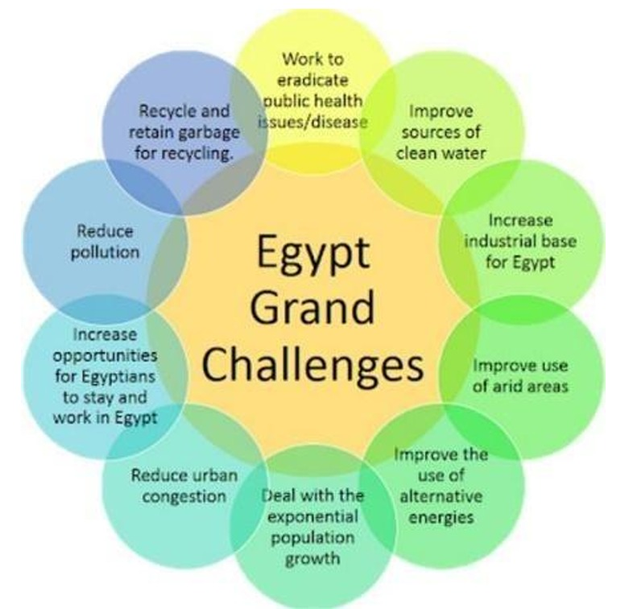
Egypt faces many serious challenges that it must overcome to build a better and more sustainable future. As shown in Figure 1. There are 11 Grand Challenges that Egypt is currently facing. Egypt‟s Grand Challenges are called by this name because they represent the biggest and most critical national problems that the country must solve in order to achieve stability and development in its environment and society. The most important grand challenges that our project addressed are listed below.
Recycling is one of the major grand challenges that Egypt faces, as the government needs to provide the citizens with all their basic life requirements, such as food, housing, education, and healthcare, which costs a large amount of money and resources.
Improving the use of alternative energy is one of the main challenges that Egypt faces nowadays. Burning fossil fuel produce energy. However, it causes pollution at the same time. Egypt should try to produce energy from different resources as water, wind, and sun.
Improving the use of water resources is also one of the key challenges. As the population continues to grow and expand, Egypt should focus on developing and utilizing its water resources by providing water, infrastructure, and suitable living conditions to reduce pressure on the Nile Valley and Delta.
Climate change is a major grand challenge for Egypt due to extreme weather conditions, increasing temperatures, water scarcity, and sea level rise, all of which have a direct impact on the country‟s food security, economy, and the health of its population.
Alternative energy is the energy that comes from sources other than fossil fuels. These sources are cleaner and more eco-friendly. However, the whole world now relies on fossil fuels as a main source of energy. which is bad and damages the environment and the economy. There is no diversity in most of the world's energy. This results in a reduction in energy due to population growth. As the kinds of energy aren't sufficient for population growth. When comparing Egypt with other countries, it will be observed that it does not have diversity in energy, and its population growth is increasing sharply, which has led to a reduction in energy, and the demand for it is increasing. According to ALTERNATIVE POLICY SOLUTION, Egypt is also the largest country in North Africa, with a population growth of more than 120 million, more than any other Arab region in terms of population, which has led to a growing demand for energy. For evidence, Egypt relies on a few types of energy, and there is no diversity. In 2023, only 3,500–4,000 electric vehicles were in use in the country (El Sawy, 2023). While the number of cars that consume fossil fuel number was exceed 7.49 million registered vehicles.
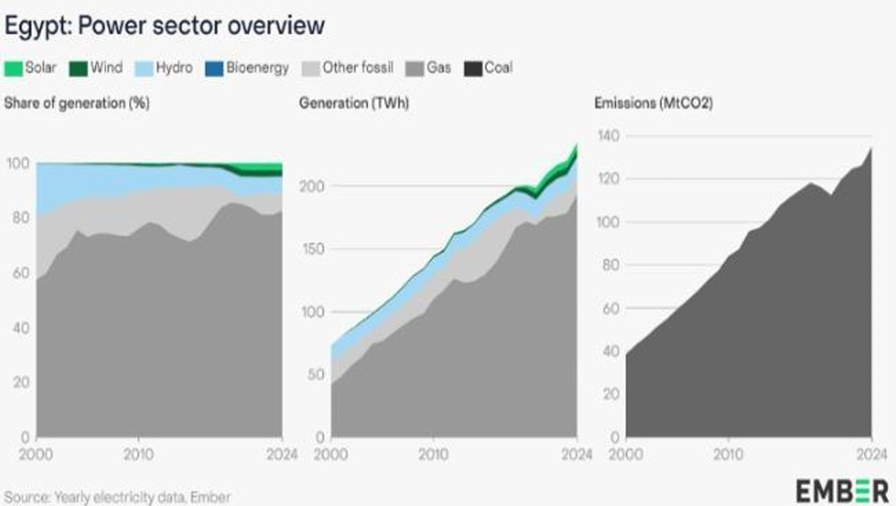
Egypt has no alternative energy, and the alternative energy that it uses is limited; the country is overly reliant on unsustainable energy. As illustrated in Figure 2, coal rises sharply from 40 MtCO2 in 2000, reaching 140 million tons of CO2 in 2024. On the other hand, the renewable energies, such as hydroelectric power, contribute 6%, while solar and wind together contribute 4.8%, less than one-third of the global average of 15%. The renewable and sustainable power appears slightly in the graph.
A renewable structure is highly costly in manufacturing, like solar panels, which makes it a deception to use this kind of energy in heavily way. According to The International Renewable Energy Agency (IRENA, 2023), renewable projects can be 30–50% more expensive upfront than fossil fuel plants, even though they are cheaper to operate in the long run. So, building a solar panel require large investment. According to alternative policy solutions over the last eight years, the price of electricity has doubled frequently; moreover, the power was cut. Showing that the energy becomes more expensive. So, Egypt's economic does not able to support renewable plants like solar.
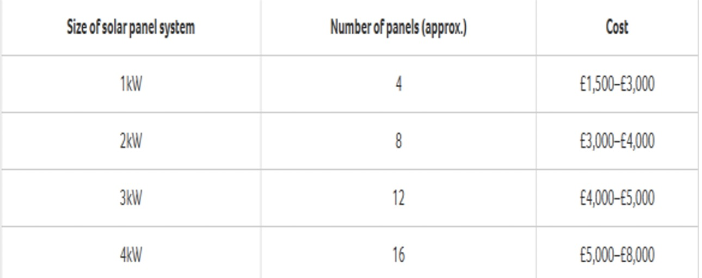
As shown in Figure 3, the cost of solar panels is extremely high compared with the financial state of Egypt‟s energy system. Which cuts the electricity off to save energy and to reduce economic pressure.
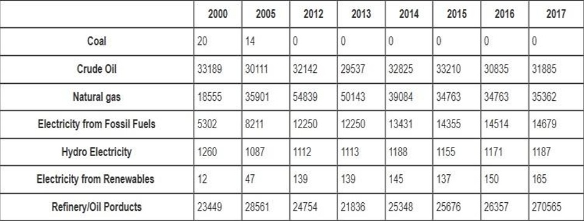
Renewable energy is affected by weather conditions, and this is one of the greatest setbacks. Solar energy production depends on sunlight, while wind power depends on wind speed. There are days when the sun does not shine or the wind does not blow; hence, electricity generation decreases. Consequently, the renewable energy is variable depending on the weather. On the other hand, fossil fuels can be controlled by humans. like to burn more coal or gas to produce more electricity. This makes renewable energy hard to depend on it as it cannot be controlled by humans. For which the change in seasons, rainy days, and calm winds may severely influence energy production. Consequently, renewable power will not necessarily provide a constant supply. Renewable systems must include a backup, such as batteries, hybrid systems, or grid support, to cope with this challenge. making them more complex and more expensive. Consequently, most of the factories in Egypt rely on fossil fuels. As shown in Figure 4 More than 90% of Egypt‟s energy comes from fossil fuels. Renewable energy makes up less than 2% of the total.
Egypt faces a significant challenge in developing renewable energy due to the lack of skilled technical and workshop centers and local experts. As a result, Egypt invests internationally experts and companies. Moreover, their wage is extremely high. According to ETF, Egypt has existing gaps in technical and managerial energy roles. Additionally, the insufficient training and experience to meet future needs. That highlights that the learning center in Egypt doesn't fully adapt yet to the requirement that qualify to work in renewable energy. Despite the big projects in renewable energy, a shortage of specialized experts hinders the rapid scaling of renewable technology. According to Research Gate, Egyptian technology is still under development in the solar energy field and investments are still at the experimental stage and have not reached the level of massive production.
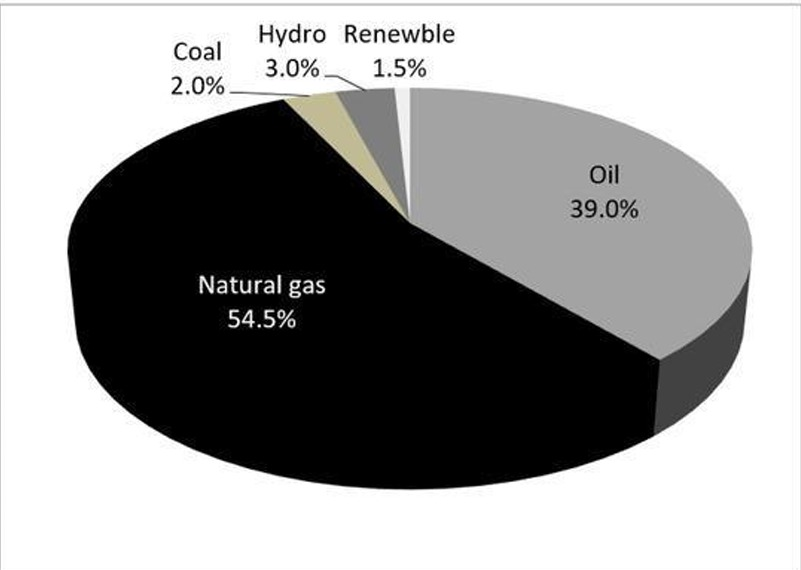
Environmental pollution in Egypt is rising sharply, specifically in the industrial areas like Helwan in the great Cairo. The Egyptian industry relies heavily on non-renewable energy, though its extensive use will pose an imminent threat to the environment. As they emit carbon dioxide and greenhouse gases. These areas are a major contributor to emissions in Egypt. Burning fossil fuels such as oil and natural gas releases a large amount of carbon dioxide into the atmosphere. As shown in Figure 5, natural gas accounts for 54.5% of Egypt's total energy, while oil ranked second at 39%. According to Egypt's energy situation, more than 90% of the electricity generated comes only from oil and natural gas. Additionally, Egypt's rapid population growth has caused a surge in energy demand, such as electricity. Consequently, environmental pollution is expected to rise sharply in the coming years.
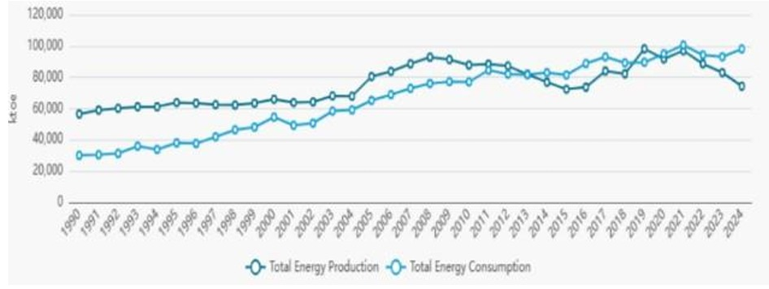
Egypt's population has been increasing rapidly. Due to the expansion in technology and the invention of new devices. This will make an energy demand. Where This expansion in technology has sharply raised energy demand. All these factors, like population growth and progress in technology and industry, consume high energy. According to Enerdata, since 2020, Egypt‟s final energy consumption has grown steadily at an average rate of 5% per year, reaching approximately 70 million tons of oil equivalent (Mtoe) in 2024. This reflects the population growth and the industry, which made energy demand especially in electricity. As shown in Figure 6, from 1990 until 2021, the energy consumption has increased every year with an average rate of 2.5%. In 2024 was a big increase, as the consumption rose sharply from the previous year by 6%, reaching 98 Mtoe. Consequently, Economic and social factors reflect the severe need for alternative energy.
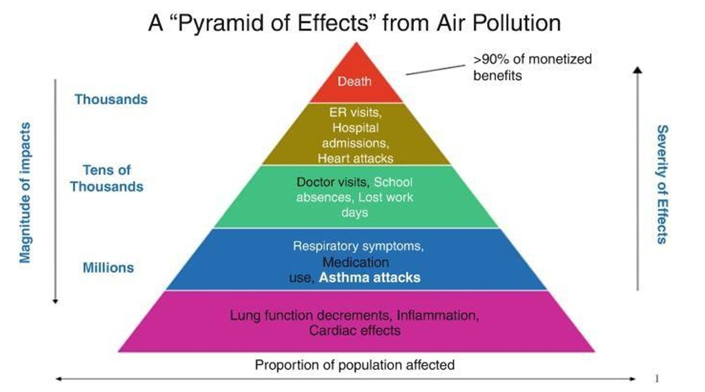
Egypt's health is in danger as greenhouse gases increase sharply, affecting the population's health badly. Additionally, the vehicles that use fossil fuels contribute heavily to raising the rate of greenhouse gases. As Figure 7 shows, how the air pollution affects health on many levels, which is dangerous. which cause respiratory disease. causing chronic obstructive lung disease, and if the polluted air enters the brain through blood stream will cause neurological disorders leading to death and heat-related disease. According to EARTH.ORG, millions of people are dying from the consequences of climate change and global warming. Exposure to high temperatures threatens people‟s lives, health, and well-being, and increases healthcare demand.
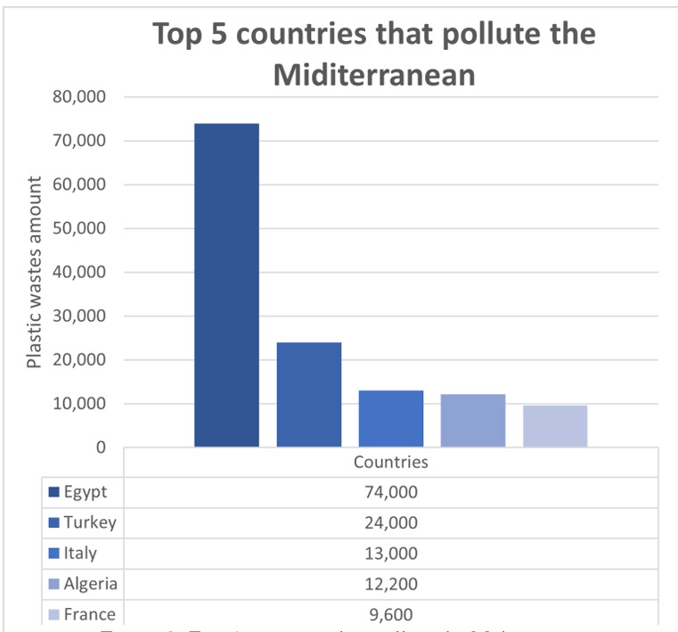
Egypt faces a monumental waste management crisis, with over 95 million tons of municipal solid waste (MSW) generated annually. A large population exceeding 105 million and rapid urbanization (43% population growth since 2000), and limited landfill capacity have transformed waste recovery into a strategic imperative; despite this, recycling rates are below 20%. It is a very low percentage for a civilized country like Egypt. Recycling is the process of taking materials that would normally be thrown away (waste) and turning them into new, useful products. Egypt ranks 8th in the world in 2019 for mismanaged plastic waste with 1,435,510 ton, according to figure 8 Egypt is the biggest contributor to plastic pollution in the Mediterranean Sea with rate of 74,000 tons/year (42% of total plastic waste in the Mediterranean) it is not a low rate as the Mediterranean Sea holds only 1% of the world's waters and 7% of global plastic wastes with rate of 730 tons/day. Egyptian people generate 21K tons/day of municipal solid waste (Cairo alone: 15K tons/day).
Economically, waste represents a lost resource. Recycling plastics, metals, paper, and organic waste can generate billions of Egyptian pounds annually, create thousands of jobs, and support small and medium enterprises.
The development of formal recycling systems and policy enforcement speed represents a fundamental reason for this problem. The formal recycling rate for municipal solid waste in Egypt reached 15.9% during 2021. The government established a goal to achieve 60% recycling rates for municipal waste by 2027. The number of recycling facilities has shown growth, but remains lacking, with 28 facilities operating and plans to reach 56 facilities. The data indicate that improvement efforts are in progress, but the existing formal waste management systems fail to handle the current waste volume. The current waste management system operates at a lacking capacity to handle the large amount of generated materials.
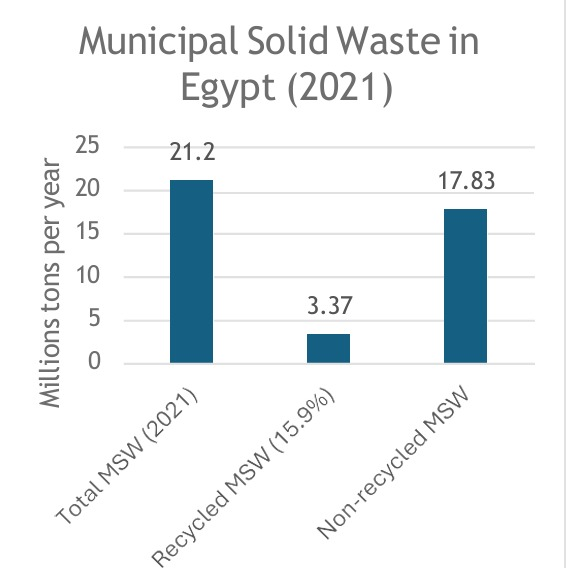
The large amount of municipal solid waste with not enough waste collection systems represents a reason for Egypt's waste management problems. As shown in Figure 9, the 2021 municipal solid waste (MSW) production in Egypt reached 21.2 million tons, which can be estimated to be 251 kilograms of waste per person annually, while the recycled MSW was 15.9% from the total MSW, which is approximately 3.37 million tons. The daily waste output in Cairo reached 17,850 tons during 2021. The waste management system faces intense pressure because population expansion and urban development produce much waste, but the system lacks collection and recycling capabilities. The combination of waste production and bad waste management systems leads to increased landfill usage, environmental dangers, and operational problems. The current waste management system fails to recover recyclable materials at their origin, which results in resource waste and higher waste management expenses.
Egypt's landfills are critically overcapacity, especially near large and crowded cities like Cairo and Alexandria. With rapid urbanization and population growth (over 105 million), suitable land for new landfills is rare and competes with agricultural/housing needs. Egypt‟s informal waste sector (the Zabbaleen) plays a major role in waste recovery. In Greater Cairo, they collect up to 60 % of solid municipal waste, with around 50,000 processors and 150,000 collectors, sorters, and transporters. There are 33,000 informal household waste collectors in Cairo alone. Displacement of these workers leads not only to economic hardship for thousands of families but also removes a low-cost, high-productivity sorting network. Some informal systems reportedly recycle up to 80 % of collected waste. Most of Egypt's municipal solid waste (95%) goes to landfills. It‟s a big loss of raw materials (plastic, paper, metals) that could be recycled to produce new products.
The health of people who live near waste disposal sites becomes threatened when waste is not disposed of correctly. The staff members who work at landfills face a high risk of health problems. People who handle waste without proper care will develop skin problems and blood infections, breathing difficulties, growth issues, and reproductive health problems. The sewage areas serve as habitats for mosquitoes and rats, which transmit dangerous diseases to humans. The breeding of mosquitoes occurs in water-filled cans and tires, which become their habitat while they spread diseases like malaria and dengue. The landfills and sewage areas provide rats with food and housing while they transmit dangerous diseases, including leptospirosis and salmonellosis. The wet conditions that waste produces create an environment where mold can multiply. The bacteria exist to multiply when they find suitable conditions, which include moisture that comes from appliances and food waste.
The present recycling system creates major financial problems because it operates at a high cost for municipalities to maintain. The absence of a unified national waste management system prevents waste from becoming an economic resource because recycling activities function independently through formal and informal, and private sector programs. The current system creates duplicate infrastructure in particular regions while leaving wide service gaps in other areas. The current recycling system faces major operational challenges because it lacks proper source sorting and collection methods, which leads to the mixing of valuable recyclable materials with large quantities of organic waste that make up most of Egypt's municipal solid waste. The high amount of contamination in waste materials requires additional energy for sorting and cleaning operations, which leads to processing costs rising to unsustainable levels. The unpredictable market prices for recycled materials lead to processing costs exceeding revenue, so recycling operations become expensive municipal responsibilities.
The recycling process collects some waste materials, but open dumpsites and landfills along waterways receive more than 88% of municipal waste. The environmental advantages of dry waste recycling become useless because organic waste makes up 50-60% of total waste and ends up in improper disposal methods. The anaerobic decomposition of organic waste in dumpsites produces methane emissions, which directly cause climate change. The absence of suitable facilities for waste management results in soil and water contamination because leachate seeps into both groundwater and water bodies. The combination of insufficient technology and unskilled personnel at recycling facilities produces substandard products, which need disposal, thus transferring environmental impacts instead of solving them.
Pollution is a major problem in recent days in the world and in Egypt. Pollution is also related to many other problems, such as health problems and climate change, so solving it has many advantages. It has many types, such as air, water, and soil pollution.
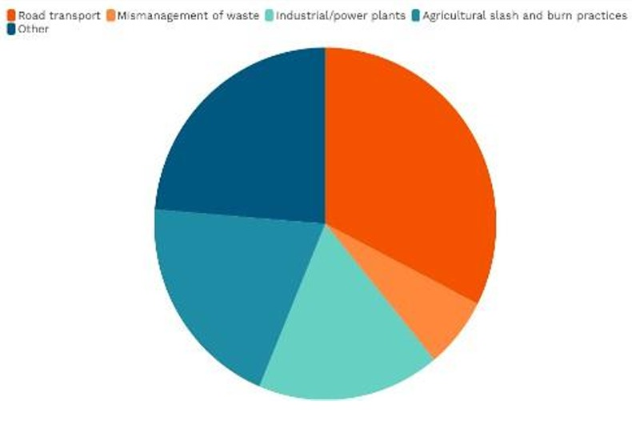
Firstly, let‟s talk about the air pollution in Egypt. Air pollution is considered the most dangerous and the most common type of environmental pollution in industrial cities such as Cairo. Now let‟s talk about the PM. It stands for particle matter or particle pollution. It is a mixture of solid particles and liquid droplets. The PM has types, one of which is the 𝑃𝑀2.5. This type has a diameter of 2.5 micrometers, which is very small. As a result, it can go deep into the lungs and bloodstream, causing serious health problems and risks. 𝑃𝑀2.5 has many sources in Cairo, which differ in their contribution to 𝑃𝑀2.5 pollution as shown in Figure 10.
Water pollution. Firstly, let‟s talk about the water and its source in Egypt, 97% of Egypt‟s water resources are from the river Nile. At the same time, Egypt has been listed among the ten countries that are threatened by a lack of water by the year 2025 due to the rapidly increasing population, which is a big problem that water pollution has a hand in. Industrial wastes are considered the major source of water pollution in Egypt. About 350 industries are discharging their sewage water either directly into the Nile or through the municipal system.
Soil pollution usually comes from intensive agriculture, mining, and improper waste disposal.
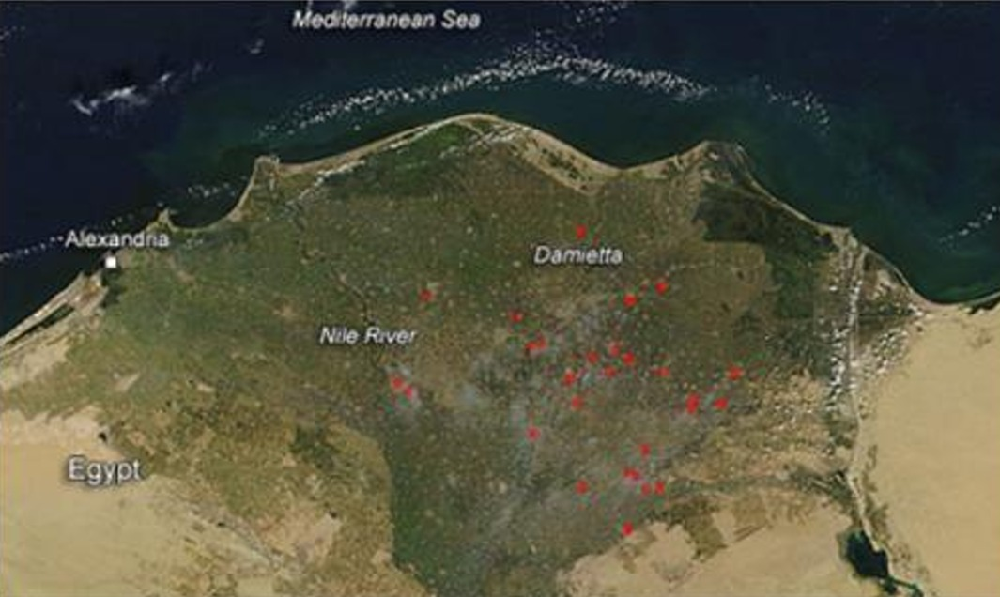
Agriculture is a source of food materials and crops, but at the same time, it is a source of environmental pollution and waste generation. These agricultural wastes are likely to be burnt. For example, farmers burn the leftover rice husks at the end of the growing season, causing health issues and adding smoke to the polluted air. As shown inFigure 11, these are the flames and clouds caused by the burning of rice husks, which was captured by NASA. As a final fact, the agricultural slash and burn accounts for the second highest proportion of the city‟s 𝑃𝑀2.5 (20%).
Industry is very similar to agricultural, as it has advantages but at the same time it has disadvantages. Factories are used in production of a lot of humans‟ needs and daily life requirements. It also very important to the economy as it help the country achieve the self-sufficient. At the other hand it is a pollution generative. One of the industries that contribute in pollution is the industrial power that contributes the third highest concentration of Cairo‟s 𝑃𝑀2.5 (17%). The use of the fossil fuels in industry is also polluting as its burning emit greenhouse gases (GHG) which is very harmful to the atmosphere which is also leads to climatic changes. At the same time Egypt is the third-largest emitter of greenhouse gases (GHGs) in the Middle East and Africa after Iran and Saudi Arabia, with GHGs reaching 351.96 MtCO₂e in 2019. Egypt‟s energy sector is the top contributor to these emissions, responsible for 74% in 2019 (WRI, 2022; Enterprise, 2020).
Marine dumping refers to the plastic; factories wastes, and oil spills from tankers that disrupt marine ecosystems and pollute the seas and oceans. As shown in Figure 12 Plastic variation with standard length in the Nile River (Clarias Gariepinus). To show the effect of the Marine dumping on the pollution, let‟s discuss research made April 2025 on the Burullus Lake. This research revealed alarming levels of microplastic pollution in Burullus Lake, the second- largest lake in Egypt, in Kafr el-Sheikh Governorate.Water samples taken near wastewater discharge channels revealed especially high concentrations of microplastics, averaging 835 particles per cubic meter, five times greater than levels recorded in the open waters of the lake. Which are alarming numbers.
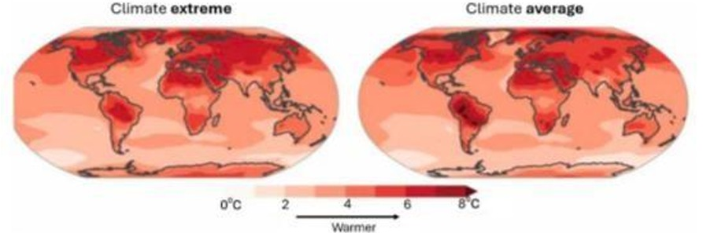
Climate change is one of the most severe impacts of air, water, and soil pollution. When talking about climate change, greenhouse gases (GHGs) are what first come to mind. These are compounds that create what is known as the greenhouse effect by trapping the sun‟s heat in the Earth‟s atmosphere and preventing it from returning to outer space. The gas most commonly produced by human activities is carbon dioxide (CO2). CO2 mainly stems from the extraction and burning of fossil fuels like coal and oil, and is responsible for 64% of man-made global warming. Carbon dioxide can remain in the atmosphere for thousands of years, making its impact on the environment all the more significant. As shown in Figure 13, this figure shows the expected average and extreme cases of climate change.
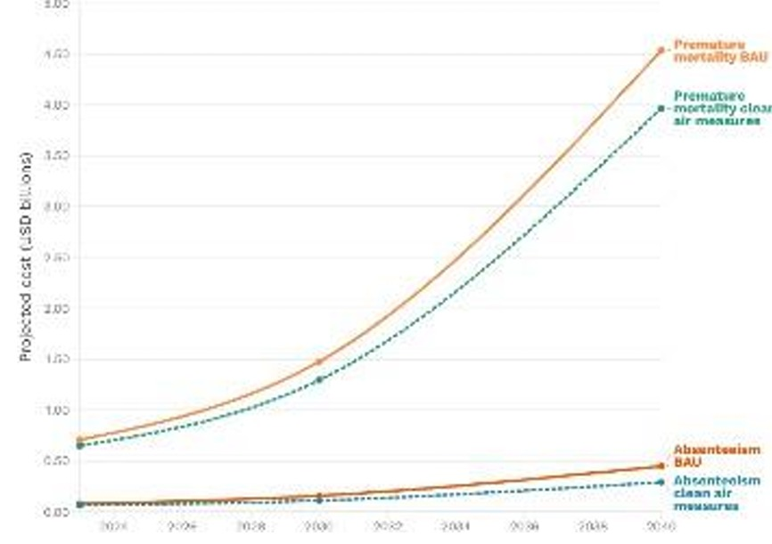
Sadly, pollution has a major effect on the public health in Egypt. Roughly 40,000 people are dying from pollution- related problems across Egypt every year. One of the most reasons of this health issue is the urban congestion in Cairo. About 20 million citizens live in Cairo. This urban congestion leads to a high amount of car emissions and air pollution affecting the health of the citizens. In Cairo, air pollution causes around 18,000 premature deaths, or 16% of the annual total. As shown in Figure 14 this is a figure shows the decrease of the Absenteeism, Premature mortality and costs.
In Egypt the historical monuments are very important because the Pharaonic heritage. These historical monuments shape of the strongest economic pillars in Egypt which is the tourism. To support that Egypt welcomed approximately 19 million tourists, achieving a new record with a growth rate of 21% compared to 2024. Pollution causes a phenomenon that is called Black Crust. This phenomenon is one of the most dangerous degradation products in building stones and are closely connected with environmental pollution. It is very common on the carbonate substrates as limestones which is the stone the Pyramids of Giza were built with. Moreover, black crusts threaten the conservation of the stone surfaces: hard crusts, usually firmly attached to the stone are very hard to remove and can weaken the surface on which they develop.
Climate change refers to long term changes in temperature, rainfall patterns, wind systems, and other components of the Earth's climate. While climate variations can occur naturally, current changes are mainly driven by human activities, especially the burning of fossil fuels and industrial growth.
Egypt, due to its geographical location and dependence on the Nile River and coastal zones, is considered as one of the countries highly affected by climate change impacts.
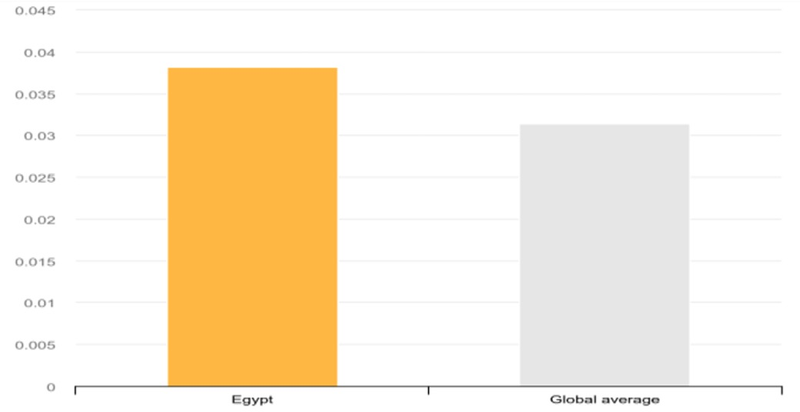
Climate change has become a serious environmental challenge. In recent years, the Earth‟s surface temperature has increased at a rate faster than in any previous period. The World Meteorological Organization (WMO) reported that the year 2024 was likely the first year in which the global average temperature exceeded +1.5°C above pre-industrial levels (1850–1900), reaching approximately 1.55°C. Furthermore, the concentration of carbon dioxide in the atmosphere reached the highest levels in millions of years. Global warming is the most common type of climate change. It‟s the increase in CO2 and methane in the atmosphere that raises global temperatures, and this has a harm effect on living systems.
As shown in Figure 15, the difference between Egypt‟s average warming and the global average warming is. This graph explains that Egypt has a big problem with the warming in weather. This means that Egypt is affected by global warming and this could affect badly on people‟s lives, agricultural activities, or any aspect of the economy in the country.
Scientists and international organizations are studying climate change carefully to understand its impacts because the global impact of climate change affects all countries.
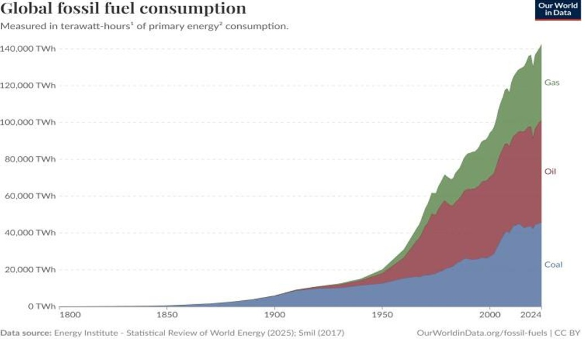
The burning of fossil fuels, which include coal, oil, and natural gas, is a primary cause of climate change. In Figure 16, we can notice the increase in consumption of fossil fuels in the last few years. These fuels release greenhouse gases like carbon dioxide (CO2) and methane gas (CH4) into the atmosphere, which trap heat and contribute to global warming. The Intergovernmental Panel on Climate Change (IPCC) has found that emissions from fossil fuels are a dominant cause of global warming, with 89% of global CO2 emissions coming from fossil fuels and industries in 2018. Burning fossil fuels has led to an increase in global average temperatures.
Transportation is one of the fastest growing sources of emissions in Egypt. Road transport, especially private vehicles and diesel-powered trucks, contributes heavily to air pollution and greenhouse gases. The emissions of transportation have massive harm on the climate, for example, it increases CO2 and methane gas in the air, which has a detrimental effect. In fact, the transport sector alone has emitted 48 million tons of carbon dioxide, and national studies and reports have observed that, in the absence of sustainable transport ways, greenhouse gas emissions are expected to reach 124 million tons of carbon dioxide by 2030, which would have negative impacts on our cities and citizens‟ health.
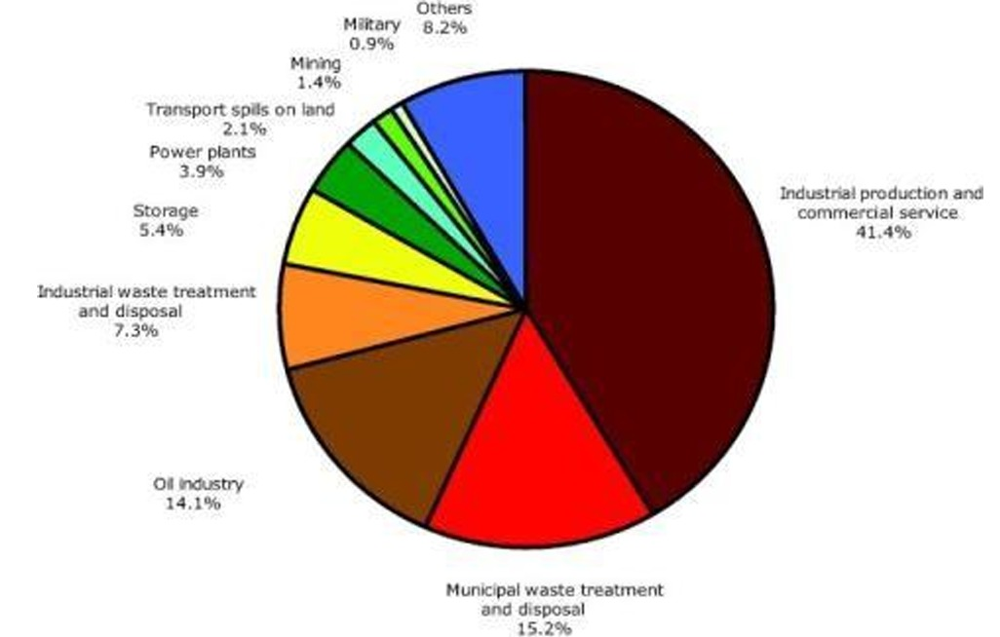
The manufacturing industry is one of the largest contributors to greenhouse gas emissions worldwide. As demonstrated in Figure 17, industrial waste contributes to 7.3% of sources of pollution, which is a dominant source of climate change. Industrial production has the biggest ratio of causes of pollution. Manufacturing and industry produce emissions, mostly from burning fossil fuels to generate the energy needed to make products like cement, iron, steel, electronics, plastics, clothes, and other goods. Similarly, Mining and other industrial processes also release gases. Machines used in the manufacturing process often run on coal, oil, or gas. Some materials, like plastics, are made from chemicals sourced from fossil fuels.
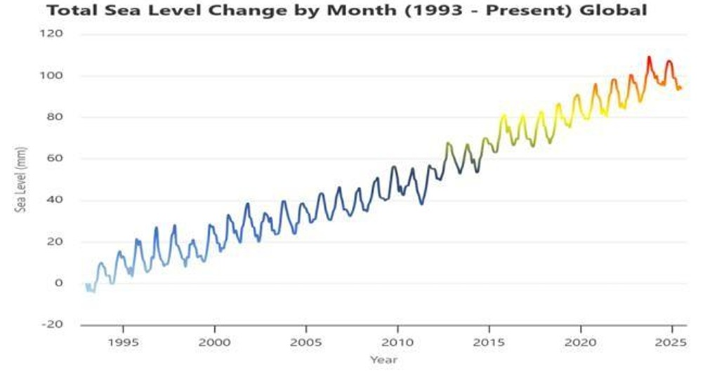
The increase in sea level means the amount of seawater climbs until reaching an abnormal amount. This happens when the temperature at the poles increases, so that the ice at the poles melts and the global sea level rises. As demonstrated in Figure 18, the change in sea level over the years. The global average of sea level reached a new level in 2021, it has increased in average 4.5 mm per year of period 2013-2021, and it‟s more than 2 times the average of period 1993-2002, this shows us primarily the speed loss of ice mass and this has a big damage on hundred million of coastal people, and high ability to tropical cyclones. The average rate of sea level rise along the Egyptian Mediterranean coast is approximately 3.4 mm per year, which is higher than the global average of 1.8 mm per year.
Changes in climate have a big effect on human health. Climate stressors like: rising temperature, changes in precipitation patterns, droughts, sea level rise, and changes in ecosystems exacerbate waterborne and foodborne disease risks. Climate change affects availability, quality, and diversity of food, deepening food and nutrition crises.
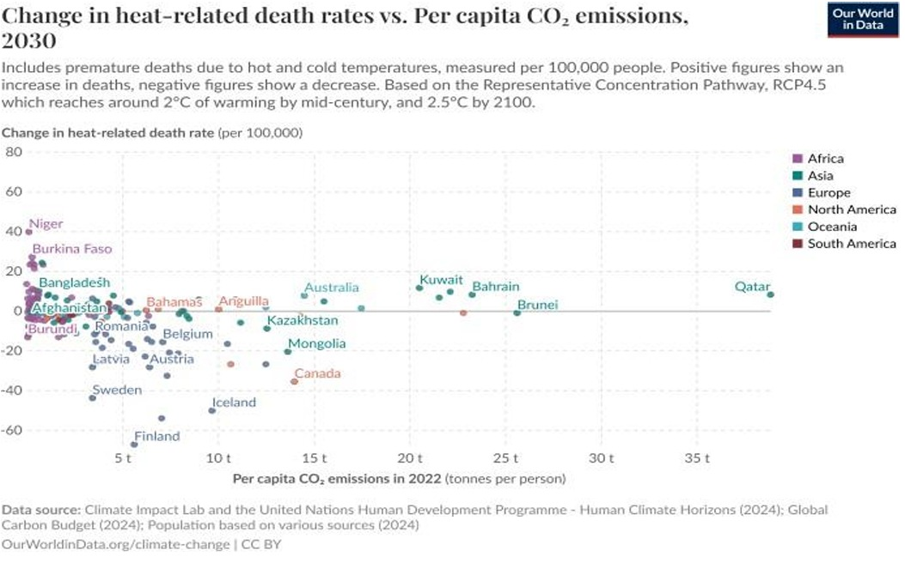
Recent research attributes 37% of heat-related deaths to human-induced climate change. The WHO conservatively projects 250 000 additional yearly deaths by the 2030s due to climate change impacts on diseases such as malaria and coastal flooding As shown in figure 19.
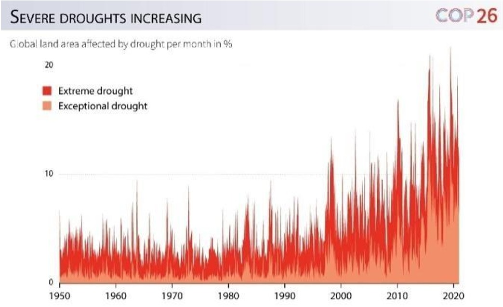
Droughts happen when the temperature increases and there is not enough rain, so that lands turn into deserts, thus affecting people, animals, and plants‟ lives negatively. As shown in Figure 20, droughts have increased a lot, for example, from 2001 to 2024, Egypt lost 1.85 kha of tree cover, equivalent to a 1.2% of the 2000 tree cover area, and 560 kt of CO2 emissions.
Droughts are dangerous; they could lead to a decrease in important crops in the world, which could lead to famines and the spread of diseases. The soil is getting worse because of deserts. The main crops, like wheat, corn, and soy, had decreased in production. Researchers and scientists predict that by 2100, soy yields could decrease by 16%, wheat yields by 7.7%, and corn yields by 8.3%. And that's if we somehow manage to keep the change in climate under check. In extreme heating situations, the losses might be even worse.
Water is from essential thing that every living organism need in his life. Water is used in many fields like agricultural, industry and other economic values. There are many resources in the world like oceans, seas, lakes and rivers. But clean water is more important as without sufficient and clean water, human life and economic development cannot continue. For this reason, many countries around the world consider water management a top priority.
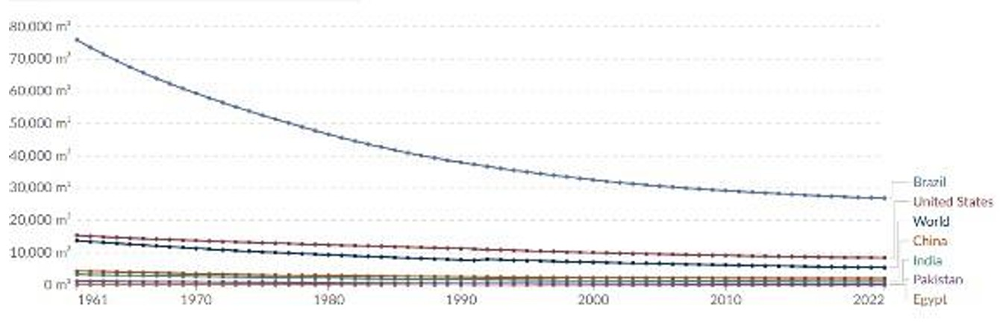
In Egypt, water resources are limited and mainly depend on the Nile River, which provides more than 90% of the country‟s freshwater with rapid population growth, climate change, and increasing agricultural and industrial activities, the demand for water has risen significantly. This has created serious pressure on available water resources and made water management a national priority. In conclusion, water is from important thing that government must put it in its thought. As shown in figure 21, The graph compares renewable water resources per capita in several countries, including Brazil, the United States, China, India, Pakistan, and Egypt, as well as the world average, from 1961 to 2022. The values are measured in cubic meters per person per year. By the 1990s and 2000s, Egypt‟s per capita water share dropped below the international water scarcity threshold of 1,000 cubic meters per year, placing the country in a state of severe water stress. In recent years, the value has continued to decline, reaching very critical levels. This means that each individual in Egypt now has access to much less water than what is required for a comfortable and sustainable life.
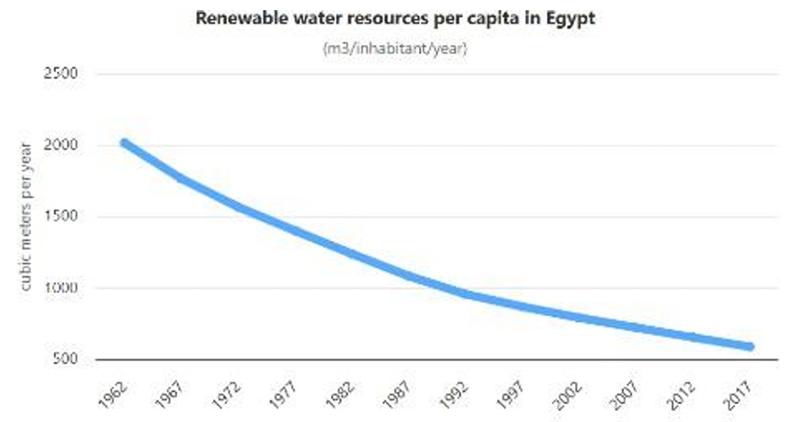
Egypt‟s population is increasing quickly, which leads to higher demand for water for drinking, farming, and daily use. As the number of people grows, the available water per person decreases. As shown in figure 22, that shows the change in renewable water resources per capita in Egypt from 1962 to 2017, measured in cubic meters per person per year. It is decline over time. In 1962, each person in Egypt had access to about 2,000 cubic meters of water per year. However, this amount decreased in the following decades, reaching nearly 1,100 cubic meters in 1987 and falling below 1,000 cubic meters in the early 1990s. After 2000, as water availability dropped to around 800 cubic meters in 2002 and continued to decrease to about 600 cubic meters by 2017. This steady reduction is mainly due to rapid population growth, limited water sources, and increasing demand for water in agriculture, industry, and domestic use.
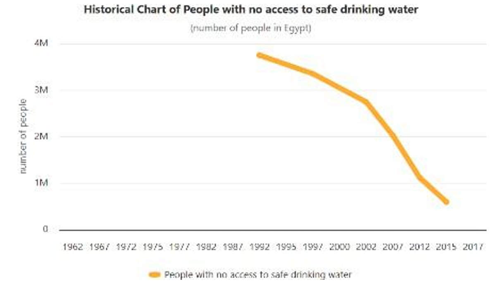
Water pollution is another cause of poor water resource. Many industrial factories discharge untreated wastewater into rivers and canals, containing chemicals, heavy metals, and toxic substances. These pollutants contaminate freshwater sources and make them unsuitable for drinking or irrigation. As shown in figure 23, That shows Egypt‟s progress in expanding access to safe drinking water from 1962 to 2017. Initially, the number of people without access rose sharply from 1 million to over 4 million by 1992, as rapid population growth overtook infrastructure development. A period of stability followed until 2000, when major investments likely linked to Millennium Development Goals activated a dramatic decline. By 2015, only about 1.5 million lacked access, reflecting successful policy interventions. However, a slight uptick after 2015 suggests emerging challenges from continued population growth or aging infrastructure. Overall, the chart illustrates Egypt‟s significant long-term progress despite demographic pressures.
Egypt‟s water resources are extremely limited, making the efficient use of water essential for sustainable development. The country relies almost entirely on the Nile River, which provides about 98 % of its water supply, and there are very few alternative sources such as rainfall and groundwater. The Nile water share to be paid to Egypt under international agreements is fixed at approximately 55.5 billion m³ per year, and small contributions come from deep aquifers, rainfall, and detoxification plants together these totals around 59 billion m³ annually. Meanwhile, Egypt‟s annual water demand is much higher and per capita availability has declined sharply over the decades. Because Egypt has limited internal renewable water sources and depends on a fixed distribution of externally supplied Nile water, it faces serious pressure to manage this scarce resource more efficiently.
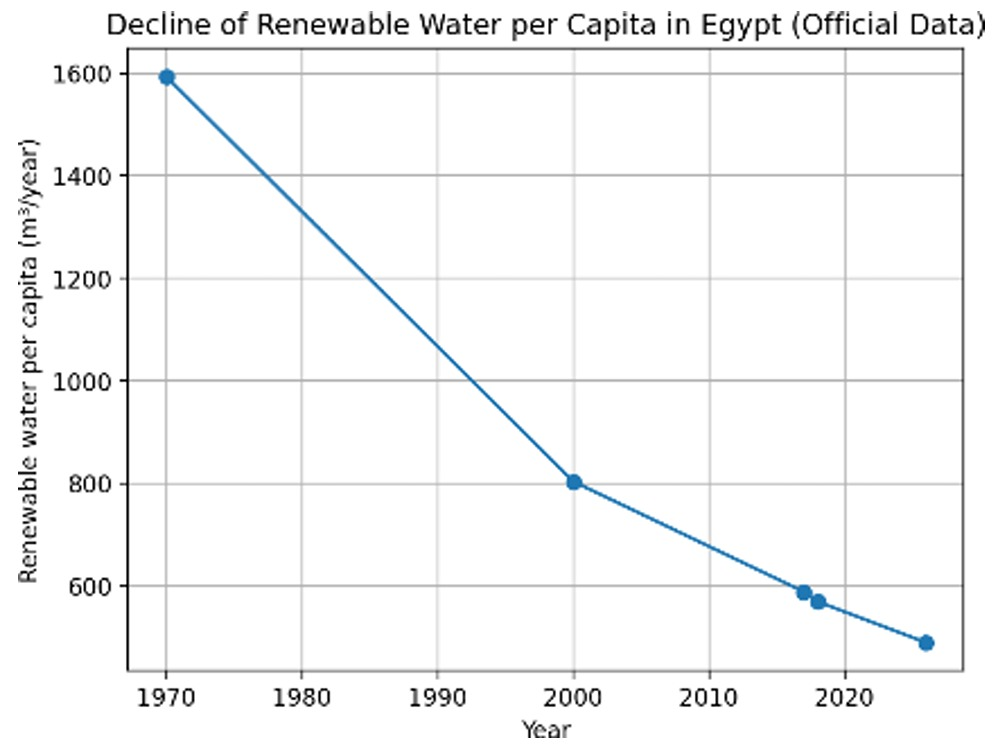
Improving water use in Egypt has a measurable impact on reducing water waste, even though total water resources remain limited. As shown in figure 24, Egypt‟s total renewable water resources per person have dropped to around 510 m3 per year, reflecting both population growth and demand pressures. This limited supply makes reducing water loss from leaks and inefficient irrigation especially important.
Currently, losses from old and damaged distribution systems and flood irrigation represent significant waste in the system. When authorities repair networks or introduce modern irrigation like drip systems, more of the limited water actually reaches farms and homes, reducing unnecessary waste and improving overall water availability without increasing supply. This means that improved water use contributes directly to more sustainable daily water management in agriculture and urban areas, optimizing the resources that Egypt already has.
Agriculture is the largest consumer of water in Egypt, using about 86% of total water withdrawals according to FAO data. This heavy dependence means improving irrigation efficiency is essential for national water security. Most Egyptian farms still rely on surface (flood) irrigation, which covers about 85% of irrigated land and has relatively low efficiency. Studies show that field irrigation efficiency may be only around 50%, meaning large amounts of water are lost through seepage, evaporation, and over-watering. In addition, billions of cubic meters of irrigation water are lost along canals and distribution systems every year. Improving irrigation methods, canal maintenance, and crop selection can significantly reduce these losses and increase water productivity.
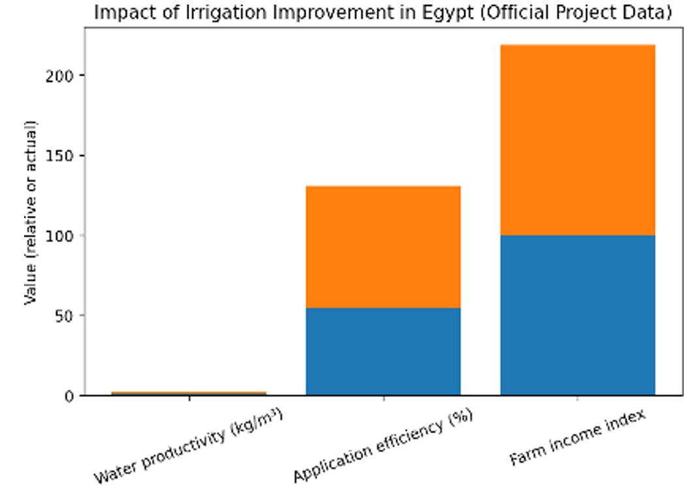
Improving irrigation systems in Egypt has produced measurable benefits in water use and agricultural productivity. As demonstrated in figure 25, Official project results show that rehabilitated irrigation channels increased application efficiency from about 50-60% to 63- 89%, meaning a larger share of water actually reaches crops. Water productivity for wheat nearly doubled, rising from 0.93 kg per cubic meter to 1.75 kg per cubic meter after improvements. These efficiency gains also translated into economic benefits, as World Bank irrigation projects reported a 13- 25% increase in farmers‟ net income. The data demonstrate that better canal design, modern irrigation methods, and improved water management reduce losses, increase crop output per unit of water, and improve rural livelihoods. This confirms that water-use resources improvements can significantly enhance Egypt‟s agricultural sustainability.
Egypt has been experiencing a power outage emergency during increasing temperatures resulting from climate change and increasing consumption rates in light of the population increase of about 120 million citizens, in addition to other imbalances in the energy sector. Furthermore, Egypt has been hit by power outages before, and their severity increased after 2011 due to deterioration of electricity networks and their inefficiency amid the lack of investment in this sector, as well as the inactivity of production.
Most of the sources of energy used in Egypt are unsustainable sources, as Egypt uses petroleum and natural gas as the main sources of energy in the country. These sources can‟t be used all the time as they won‟t exist anymore.
Electricity is a significant energy that nobody can deny its role in our lives. Despite that, there are many regions in Egypt that are affected by the continuous power outages, such as the governorates in the south of Egypt and Sinai. Electricity in Egypt faces numerous challenges that hinder its adequate provision to ensure a decent standard of living for the population. Among the most prominent challenges in many Egyptian governorates are the frequent power outages in many areas. This is due to the age and deterioration of electrical wires and infrastructure, particularly in Upper Egypt and agricultural regions. The statistics showed power outages in many areas for days on end, sometimes reaching 8 hours a day.
One of the most prominent areas in Fayoum Governorate experiencing weak electricity production is the Yusuf al-Siddiq district. This district is located at the end of the governorate's electricity pumping station, which negatively impacts the amount of electricity reaching it. Voltage drops occur, resulting in a 15-25% decrease in the amount of electricity supplied to the district. Voltage drop is a loss of electrical voltage during the transfer of current from the source to the consumer. In rural and remote areas, the current sometimes arrives at a voltage much lower than the required 220 volts; it may be as low as 160 or 170 volts, preventing devices from operating efficiently or causing them to malfunction. Yusuf al-Siddiq is an expansive area, with some villages located at the ends of power lines. When the distance between the source of electricity and the village increases, the voltage loss increases.
Also, recent studies, including one specializing in "Sustainable Solid Waste Management in Rural Areas of Fayoum Governorate" (2023), show that the environmental situation in centers like "Yusuf al-Siddiq" faces complex challenges resulting from the absence of an effective collection and recycling system, making them areas of extreme priority for development. Most of this waste is plastic, which pollutes the Karoon Lake and harms sea animals, as people in the region can‟t deal with it. Approximately 90% of the plastic waste was disposed of in open dumps, allowing the wind to carry the lightweight plastic into waterways and from there into the lake. Plastic films constitute between 4.8% and 6.6%, while PET plastic bottles represent approximately 0.7%. So, using the plastic waste to generate electricity as a supplementary source to the main source will help to improve the region and decrease pollution.
People in Yusuf El Seddik village suffer from the poor quality of electricity they have. The horrible facility they have is affecting many aspects of life. Students can‟t study well as there is no good source of light, and factories can‟t keep working while the electric current is always being cut off. Because of that, people need to improve their lives. They need to enhance the electricity that is being provided to the village. So, when we solve the problem of electricity, their lives will change in a noticeable way. The students will be able to study well again. The employees and the factories will go back to work and begin to produce products. And the most affected field will be the medical field. The hospitals need energy all the time, as there are many patients who need help and appliances to treat them. Without the energy, those people may die. So, providing the electricity to the village will be one of the best ways to develop the people‟s lives.
Energy is a significant treasure that every country wants to produce more and more of. In Egypt, we usually use fossil fuels as a main source for energy production, which affects horribly on the climate. So that, when we move to generate energy from new sources like water and air, this will help the country and decrease the amount of pollution around us. The government will be assisted as the project provides the energy to remote villages, and this will reduce the burden on the government. Furthermore, the idea of the project is cheap and can be used in many places, so we can rebuild the project in many villages in need of energy and generate more of it. At the end, maybe the production has a surplus to export to other countries. And this will provide a huge amount of money for the government.
In general, the agriculture in Egypt follows traditional farming methods. Such as submerging the farming land with water, which is considered a waste of water without any use. Also, plowing the land and agricultural operations this requires a huge effort from the farmers. So, our project will help to provide the power needed to enhance the agricultural activities, and the people will apply modern irrigation systems such as spray irrigation and drip irrigation, which need electricity to work. Also, we can use the brand-new vehicles, such as the tractor and other electric machines, that help in agriculture. Another major benefit is post-harvest management. A large percentage of crops in rural areas are lost due to poor storage conditions. By using electric-powered cold storage units and cooled tanks, farmers can preserve crops for longer periods, maintain quality, and reduce post-harvest losses.
Health is one of the most significant fields that the country should care about. In the Yusuf El Seddik village, the hospitals are harmed because of the poor electricity source. Electricity is not a luxury in healthcare facilities; it is an essential requirement for saving lives. If the problem isn‟t solved, the health of citizens will be affected badly. Power cuts interrupt the operation of critical medical equipment such as ventilators, heart monitors, and laboratory machines. Any sudden interruption may delay diagnosis or even threaten patients‟ lives, especially in intensive care units. Moreover, many medicines, serums, and vaccines must be stored at specific temperatures to remain effective. Frequent electricity outages can damage refrigeration systems, leading to the spoilage of these vital medical supplies. This not only causes financial losses but also puts patients at risk due to the lack of safe and effective treatments.
Pollution is a significant challenge facing our country due to the use of fossil fuels, the disposal of waste in water sources, and industrial activities. In the Yusuf El Seddik village, the most common type of pollution is water pollution, especially in Karoon Lake. People in the village used to throw the plastic waste into the lake, which caused huge harm to the sea animals and the marine environment. Moreover, plastic waste does not decompose easily; it can remain in the water for hundreds of years. As a result, the amount of pollution increases year after year, and the environmental damage continues to spread. This also affects fishermen, tourism activities, and the overall economic condition of the area. Our project will help decrease the amount of pollution, as we will use the plastic bottles that were thrown into the water in constructing the wheel we will use. The idea will help generate energy without any use of materials that harm the environment, and clean the lake of garbage.
Each small business, such as workshops, stores, and small factories, needs electricity to work and produce. The energy problem in Yusuf El Seddik village has negative effects on the small businesses and their owners. When electricity is unavailable, machines stop working, production lines shut down, and services can not be provided. Factories cannot operate their equipment, and workshops can not use their tools. As a result, productivity will decrease, profits will decline, and business owners will struggle to cover their expenses, such as rent, raw materials, and salaries. Moreover, the absence of stable electricity directly affects workers and employees. Without production, there is no income, and without income, families suffer financially. Some businesses may even close permanently due to repeated losses, which increases unemployment rates in the village. This ongoing problem may push young people to leave the village and migrate to larger cities in search of stable job opportunities and better living conditions. Over time, this migration can lead to a shortage of skilled workers and active labor forces, weakening the local economy. The village may lose its productive youth and become less capable of growth and development.
Water pollution happens when harmful substances enter lakes, rivers, and oceans, making water unsafe for people, fish, and plants. As presented by the Youssef El Siddig center in Fayoum government, burning fossil fuels and industrial waste is a major cause of polluted water. Renewable energy, especially hydropower, helps reduce these problems because it generates electricity from flowing water without burning fossil fuels that pollute water bodies. Using clean energy decreases dirty runoff and chemical leaks from fuel extraction and burning industries. Hydropower also supports better water management and can help filter sediments in reservoirs, improving water quality for towns and farms.
Sustainable development means meeting today‟s needs without harming future generations. Energy is very important for education, industry, and healthcare, but it must be clean and safe. Renewable energy helps achieve this goal because it does not destroy natural resources. Small hydro plants can provide electricity to rural areas without causing pollution, like in the Youssef El Siddig center in Fayoum government. This supports economic growth, improves living standards, and ensures that natural resources remain available for future generations.
Climate change happens when greenhouse gases trap heat in the atmosphere, causing the Earth‟s temperature to increase. This leads to hot weather, melting ice, and increasing sea levels. Most of these gases come from burning fossil fuels. Clean energy sources, such as hydroelectric power, help reduce these emissions. Many countries follow global agreements like the Paris Agreement to limit climate change by using renewable energy. Student projects like eco-hydro plants also play a role by showing how clean power can replace polluting energy and protect the planet.
In small eco-hydro power facilities, the principal energy source is moving water. As water descends from a higher position to a lower position, it is endowed with potential and kinetic energy. The energy is transmitted to the turbine blades and makes them turn. The energy generated gets affected by the velocity of water and the crossing height. The increase in water velocity and the difference in height between the two water points enhance the electricity output. Water is always pulled by gravity downward, and the addition of gravity is the water movement. An effective mapping of water flow rate and energy transfer is critical to the structural design and accomplishment of the eco-friendly hydropower system.
The turbines and the generators are the main parts of hydroelectric plants. Water hitting the blades of the turbine makes it spin. The spinning is transferred by a shaft to the generator. Inside the generator, mechanical energy is converted into electrical energy by electromagnetic induction. The efficiency of the conversion is on the turbine design, blade shape, and demanded RPM. In small eco-hydro plants, compact, tough equipment is used for the reduction of energy losses and low conservation costs. Correct installation and periodical review are essential for the improvement of system efficiency and life time.
Structural stability is required for the support of the turbine, pipes, and generators, along with constant water pressure. The materials used should be durable, watertight, and non-corrosive. At the same time, eco-hydro plants are designed in such a manner that the ecosystem remains unaffected. Eco hydro does not require large dams or channels; rather, it needs only small channels or pipes. Thus, it properly supports the survival of fish and plants. In addition, filters and screens are made for the prevention of fragment accumulation.
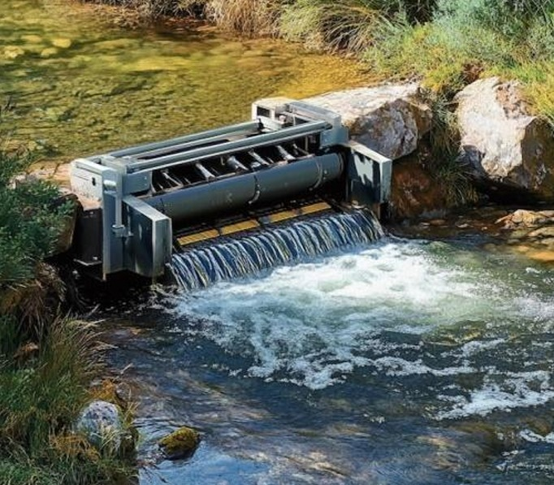
Microhydropower is a simple system that aims to generate electricity from the flow of water, such as rivers, waterfalls, and canals. In addition, this project only operates on a small scale that suits the small villages or houses, as shown in Figure 26. The most suitable places for the project are the mountain villages, such as the Microhydropower systems in Nepal and India, also the agricultural areas near water flow, and the places that have a weak electric connection, such as Yusuf Siddiq in Egypt.
The small systems, like the Microhydropower system, started spreading throughout in the middle and the end of the last century, especially in the mountain and agricultural areas those far from the electric sources. The new concept for Microhydropower was shown as a solution for the developing countries to provide low-cost electricity, as it doesn‟t require dams, and its creation doesn‟t require so much money.
This project was applied in many regions around the world, such as Nepal, one of the countries that uses micro hydro because of its mountainous nature and the rivers that it has. It was also used in India, as well as in the Himalaya; small systems have been installed to supply electricity to the villages. Also, China is considered one of the biggest countries in using small hydroelectric systems for supplying rural areas.
In Africa, the Practical Action Organization has implemented micro hydro projects in Kenya, Zimbabwe, and Nepal to provide the villages that are far from the national networks with electricity, according to practicalaction.org. And now, this system is used in Asia, Africa, and Latin America to provide small villages with power.
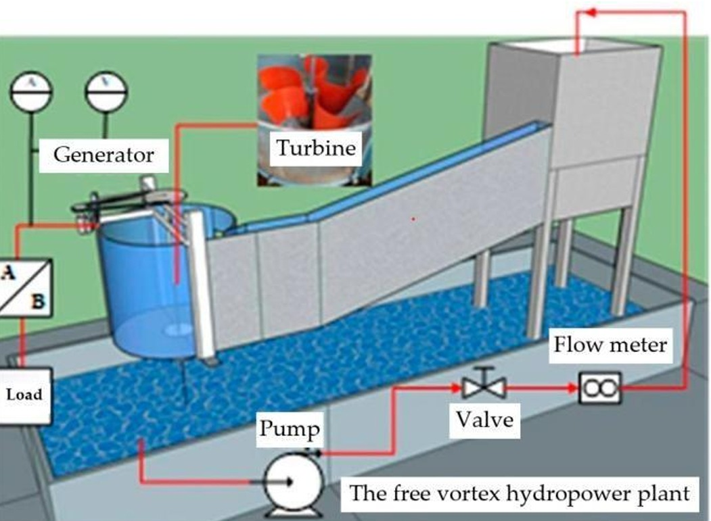
The system of Microhydropower is turning the power of water into electricity in three main stages, at first, it starts to convert the potential and kinetic energy into mechanical energy. Water has potential energy because of its height and kinetic energy because of its speed. When the water goes into the turbines, it presses on the feathers and then generates torque, and the main column starts to spin. The torque in this case depends on the rate of flow, which is symbolized by (Q), and the difference in height (h). And the main physical equation to calculate the power that is being generated is:
P = 𝜌 × 𝑔 × 𝑄 × ℎ × η
Where: P is the power, 𝜌 is the density of water (1000kg/ m^3), g is the gravity, Q is the flow rate, and η is the system efficiency.
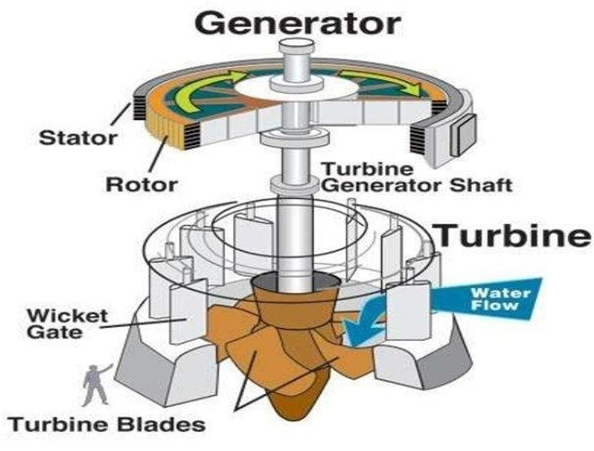
After that, we start with electric conversion. The generator works by converting the motion into electricity. The main idea depends on the electromagnetic induction, which was discovered by Michael Faraday. Simply, when we move a magnet near a copper wire, an electric current is generated in the wire. As shown in Figure 28, the generator has three main parts; they are rotor, the stator, and the magnetic field. The rotor is the spinning part; it‟s an electric magnet and the part connected to the turbine column. When the turbine spins, the rotor spins. And when the rotor spins, the magnetic field is constantly changing. This change cuts through the copper wires, generating an electric voltage. The current then starts to flow through the wire. And this is a direct application of Faraday's law.
The motion is converted into electricity because the electrons inside copper are affected by the changing magnetic field, so they move in a certain direction, and this movement is the electric current. In Microhydropower projects in Nepal, the turbine rotates about 1000 RPM, and the generator produces about 230 volts AC with a capacity of nearly 30 kilowatts.
Using water to generate electricity is considered one of the most effective solutions nowadays, especially as the world faces serious climate change challenges. Rising global temperatures, extreme weather events, and environmental degradation have highlighted the urgent need to reduce dependence on unsustainable energy sources such as oil, coal, and natural gas. These fossil fuels release large amounts of carbon dioxide and other greenhouse gases into the atmosphere, contributing directly to global warming.
In contrast, Microhydropower provides a clean and renewable alternative. It relies on the natural movement of water rather than combustion processes, meaning it doesn‟t burn fossil fuels to generate electricity. As a result, during the process, micro hydropower systems produce virtually no direct carbon emissions. This makes them an environmentally responsible energy option, particularly for rural and remote communities.
The power has a field that it can reach and cover, but there are many places that the power can‟t reach as much as required. So, the Microhydropower is a great solution for the villages and regions these far from the sources of electricity. Therefore, micro hydropower not only improves energy access for remote villages but also supports sustainable development by providing a renewable, low-cost, and environmentally friendly source of electricity.
Microhydropower systems are known for their unusually high efficiency compared to many other renewable energy technologies. In well-designed and properly maintained installations, overall system efficiency can range between 70% and 90%. This means that a large portion of the available water energy is successfully converted into usable electrical power, with relatively low energy losses during the mechanical and electrical conversion processes.
This system requires a continuous flow of water in order to activate effectively. Unlike large hydroelectric power plants that depend on massive dams to store water and control its release, micro hydropower systems typically function without large tanks. Instead, they depend directly on the natural movement of water in rivers, waterfalls, or canals. Because there is no large storage structure to control the water source, the system‟s performance is closely tied to the consistency of the water flow. If the flow decreases due to seasonal changes, drought, or bad water use, the electricity production will also decrease. In extreme cases, if the water stops flowing, the system will stop generating power.
This source of energy is mainly suitable for nearby and small communities rather than distant or highly populated areas. Since micro hydropower systems depend directly on a local water source, the electricity is usually generated to cover a limited area. Extending the generated power to faraway regions would require additional transmission infrastructure, which may increase costs and reduce efficiency. Furthermore, the total electrical output of Microhydropower is relatively modest compared to large-scale power plants. These systems are typically designed to serve villages, farms, schools, or small enterprises rather than major urban centers. The amount of power generated is generally insufficient to meet the high and continuous energy requirements of a large city, which requires hundreds of megawatts to supply residential buildings, industries, transportation systems, and public services.
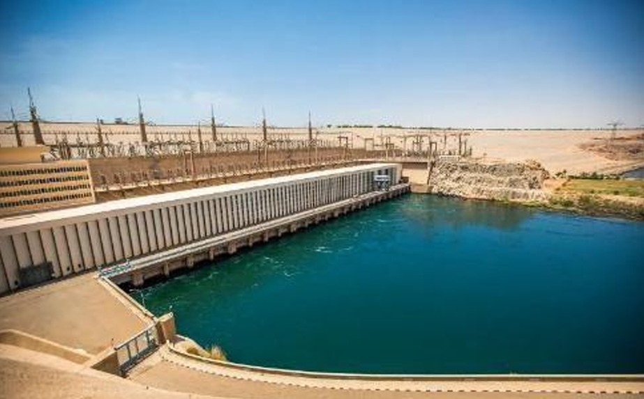
The Aswan High Dam is one of the most important engineering projects in Egypt. It was built across the Nile River in the 1960s. As shown in Figure 29, the dam was designed to control flooding, store water for irrigation, and generate hydroelectric power for the country. Before the dam was constructed, the Nile‟s annual floods were random. Some years caused destructive floods, while others led to severe droughts that affected agriculture and water supply. The dam created a lake known as Lake Nasser, which stores water during high-flow seasons and releases it when needed.
One of the main goals of the dam was to produce electricity. The hydroelectric power station inside the dam uses the force of falling water to spin turbines and generate electricity. When it was first completed, the dam supplied a large percentage of Egypt‟s total electricity demand, helping the country develop and update its infrastructure.
In addition to energy production, the dam improved agricultural stability. Farmers could now rely on a consistent water supply instead of depending on unpredictable floods. This allowed for year-round irrigation and increased crop production. The project also provided protection from the disturbing floods that had damaged villages and farmland.
However, despite its many benefits, the dam also introduced several environmental and social challenges. These include changes to natural sediment flow, displacement of communities, and ecological effects downstream. While the Aswan High Dam remains a main national achievement, its limits have encouraged the development of smaller, more flexible hydroelectric solutions such as small hydro plants designed to generate electricity with fewer environmental and social impacts.
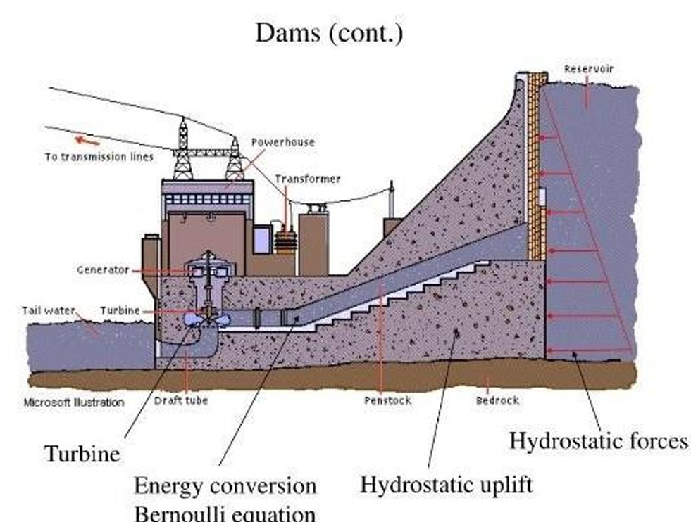
The Aswan High Dam operates by converting the potential energy of stored water into electrical energy. It is built across the Nile River and forms a large lake called Lake Nasser behind it. As demonstrated in Figure 30, which shows a mechanism of the high dam for generating electricity. Water stored in the reservoir exerts hydrostatic forces on the dam and has high potential energy. It flows through the floodgate, accelerating due to gravity, and strikes the turbine blades, converting potential energy into mechanical energy. The turbine drives a generator in the powerhouse, producing electricity, which is then stepped up by a transformer for transmission. Draft tubes direct water safely to the downstream tail water. The figure also highlights structural considerations, including hydrostatic uplift, ensuring the dam resists water pressure while efficiently converting water energy into electricity. Each turbine is connected to a generator. When the turbine spins, it turns the generator‟s rotor inside a magnetic field. This movement creates electrical current through electromagnetic induction. The generated electricity is then sent to transformers, which increase the voltage for efficient long-distance transmission. From there, the electricity travels through power lines to cities, factories, and homes across the country.
The dam also includes tubes and control gates that regulate the amount of water released downstream. These systems ensure safe operation during high water levels and help maintain a steady flow for power generation and irrigation. By controlling water storage, flow rate, and turbine speed, the dam produces a consistent supply of renewable electricity while also managing flood control and water distribution.
The Aswan High Dam has the ability to generate large amounts of renewable electricity. The dam uses the natural flow of water to produce power without burning fossil fuels. This reduces dependence on oil and gas and lowers greenhouse gas emissions. When the dam was first completed, it provided nearly half of Egypt‟s electricity, supporting factories, homes, and infrastructure projects across the country.
Hydroelectric power from the dam is also relatively stable compared to other renewable sources like solar or wind, which depend on weather conditions. As long as there is sufficient water in the reservoir, the turbines can operate and produce electricity. This reliability helped Egypt develop its industrial sector and improve living standards. The dam also reduced the need to import fuel for power generation, saving money and strengthening national energy security.
Before the construction of the Aswan High Dam, Egypt depended on the natural flooding cycle of the Nile River. Some years, the floods were too strong and destroyed homes, crops, and infrastructure. In other years, the floods were too weak, causing droughts and food shortages. The dam solved this problem by regulating the flow of water throughout the year.
The lake behind the dam stores excess water during high-flow periods and releases it gradually when water levels are low. This provides a steady water supply for agriculture, drinking water, and industry. As a result, farmers can grow crops throughout the year instead of depending on seasonal floods. This improved food production and economic stability. The dam also protects cities and villages from destructive floods, making communities safer and more secure.
The dam played a major role in expanding agriculture and supporting economic growth. With a controlled water supply, farmers were able to irrigate their fields year-round instead of relying on seasonal flooding. This allowed multiple crop cycles each year, increasing food production and income for farming communities. The increased agricultural output helped support a growing population and reduced the risk of food shortages. It also created new job opportunities in farming, food processing, and related industries. In addition, the electricity generated by the dam powered factories, transportation systems, and urban development. This contributed to industrialization and improved living standards across the country. Overall, the dam became a key factor in Egypt‟s modernization. It supported both agriculture and industry, making the economy more stable and less dependent on unpredictable natural conditions.
Aswan High Dam has a bad environmental impact, especially the loss of natural sediment flow. Before the dam was built, the Nile carried nutrient-rich silt during annual floods. This sediment naturally fertilized farmland along the riverbanks, improving soil quality and crop yields.
After the dam‟s construction, most of the sediment became trapped in the reservoir behind the dam. As a result, farmers downstream had to rely more on chemical fertilizers to maintain soil fertility. This increased farming costs and introducedpotential environmental pollution. Additionally, the reduced sediment flow affected the Nile Delta. Without the natural buildup of silt, the delta became more affected to erosion and rising sea levels.
These environmental changes show that while the dam solved flooding problems, it also disrupted the natural balance of the river ecosystem.
The construction of the dam required the creation of a large lake, which flooded vast areas of land. This forced many communities, especially Nubian villages, to relocate from their ancestral homes. Thousands of people were moved to new settlements, often far from their original lands and cultural heritage sites.
Relocation caused social and economic challenges. Many families lost fertile farmland, traditional livelihoods, and historical connections to their homeland. Adjusting to new environments was difficult, and some communities struggled to rebuild their lives. In addition, valuable archaeological sites were threatened by the rising waters, although some important monuments were saved through international efforts.
This displacement highlights a major social cost of the project. While the dam brought national benefits, it also created hardships for the people who lived in the flooded areas.
The Aswan High Dam required enormous financial investment and years of construction. Large-scale projects like this demand significant resources, advanced engineering, and international support. This makes them difficult to replicate or modify once built. If problems arise, adjustments can be complex and expensive. In addition, large dams depend heavily on water levels. During periods of drought or reduced river flow, electricity production can drop significantly. This makes the system less flexible compared to smaller, distributed hydro plants that can operate in multiple locations.
Maintenance and long-term sediment buildup in the lake also present challenges. Over time, accumulated sediment can reduce the storage capacity of the lake and affect efficiency. These factors show that while large dams provide major benefits, they also come with high costs, long-term maintenance needs, and limited adaptability compared to smaller hydroelectric solutions.
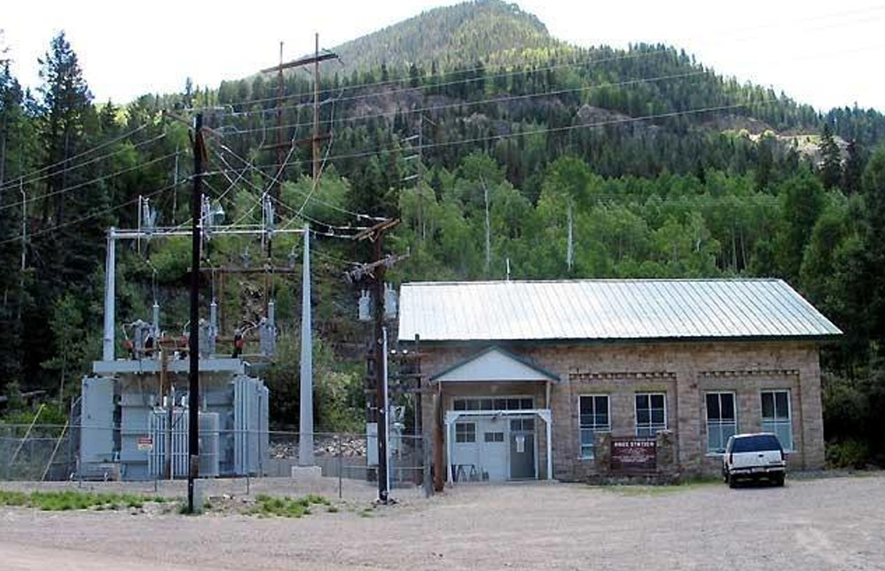
A major shift in how electricity comes from flowing water began once the Ames plant started up in 1891, high above Colorado‟s rivers. Built by L.L. Nunn alongside Westinghouse team members, it wasn‟t just another old sawmill turning logs. This time, high- voltage shifting current - AC - powered machinery without cables heats up underground. Back then, fights over direct versus alternating electricity filled newspapers and homes. One camp pushed DC; the other backed AC - tensions ran hot. Yet here, far from cities, water moved a motor far beyond arm‟s length. Power traveled along wires through mountains, valleys, and even states. Distance didn‟t stop it; delivery became its purpose.
High up, near 3,650 meters, stood the Gold King Mine, where money troubles grew like weeds. Hauling coal from far-off peaks had become too expensive to keep operations running. So, Nunn turned his eyes elsewhere to the South Fork of the San Miguel River. It lay about four hundred meters below, just under four kilometers down the mountain. Water rushed through a tight iron pipe under heavy pressure. From the top of the mountain, it flowed downward, powering a 6-foot Pelton Wheel spinning fast because of the strong force behind it. Linked by a belt, that movement turned a 100-horsepower Westinghouse machine into motion.
What made the Ames plan stand out was picking Alternating Current right away. Direct Current - DC - would drop sharply even at brief distances, limiting its reach. In contrast, the AC method used here carried power across those same 4 kilometers with almost no drain. On June 21, 1891, someone threw the switch; the machine underground started vibrating, showing that electricity could tap far-off water to run work far away.
Power transmission stopped being a question after the Ames Plant worked well. Its success shaped what came next, the huge effort at Niagara Falls, and showed how water-based electricity might move people without smoke or noise. Now, where that system once stood, machines still spin power from moving water, quiet proof of old ideas turned real. That place now stands as proof of what happens when water pushes electricity through magnets, shifting energy like an invisible force across great distances.
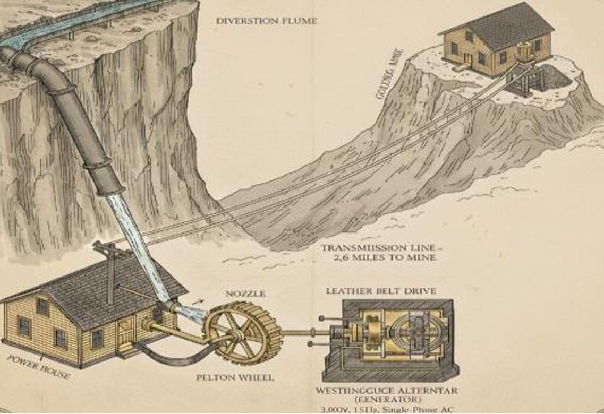
The mechanism of the Ames Hydroelectric Generating Plant is a masterclass in energy transformation, representing the first time in history that the "potential" of a mountain stream was successfully converted into "industrial motion" kilometers away. As shown in Figure 32. The system functions as a continuous chain of energy conversion, moving from hydraulic pressure to mechanical rotation, and finally to electromagnetic waves by the Pelton Wheel and Westinguge Alternator. This happens in many phases, which are the Hydraulic Phase: Potential to Kinetic Energy, the Mechanical Phase: Kinetic to Rotational Torque, the Electrical Phase: Rotation to Alternating Current, and the Transmission Phase: Voltage Regulation.
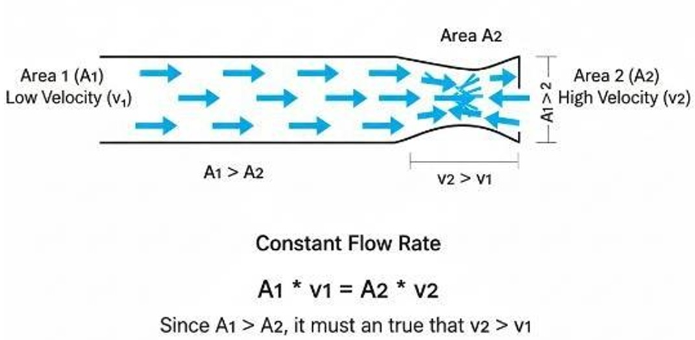
Firstly, the process begins by diverting a river into a penstock (a long iron pipe) that drops 300 meters. This significant height uses gravity to build massive pressure as the water falls. As the water reaches the bottom, it is forced through a narrowed channel. As shown in Figure 33, this physical squeeze acts as a catalyst by decreasing the cross-sectional area, using this law makes the velocity increase as there is an inverse relation, converting the heavy potential energy (pressure) into high-velocity kinetic energy (motion). The result is a concentrated, powerful jet of water designed to provide the mechanical force necessary to power the plant.
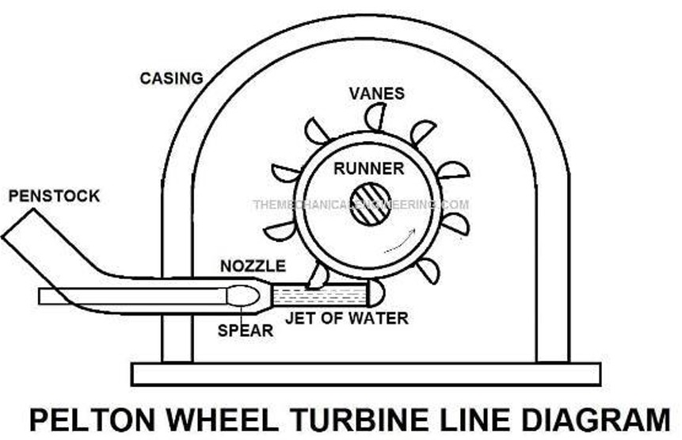
Secondly, As shown in Figure 34 right in the middle of its setup comes this fast- moving jet - aiming straight at the 6-foot Pelton Wheel. This particular type runs on impulse power, equipped with unique bowl-like buckets shaped around a central splitter piece. When the stream strikes that splitter, movement shifts sideways, water turns sharply, heading right back where it began. Water gives up its greatest momentum when moving backward, thanks to physical rules. That momentum shifts into the wheel. Because of this, the main rod turns with strong force and consistent motion.
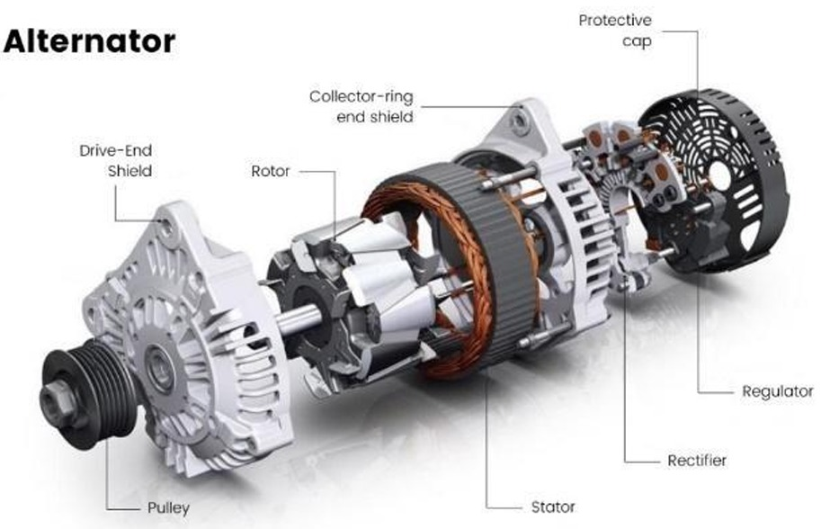
Thirdly, from the center of the Pelton Wheel, a fast-moving rod sends power through an enormous leather belt out to a big machine built by Westinghouse. As shown in Figure 35 That device holds moving magnets called the rotor that whirl around while surrounded by fixed copper loops, known as the stator. When those shifting magnets race by, they stir up electric currents in the nearby wires. When the magnets spin, they shove and then drag electron flows in motion, forming a single-phase alternating current.
Fourthly, four kilometers separated the power source from the Gold King Mine, so most of it had to travel as electricity. To cover that distance using less energy, the team chose high-voltage transformers. These transformed incoming power up to 3,000 volts into a stronger electrical signal. That boosted voltage moved easily along the wire lines, losing barely anything along the way. Once at the mine site, another kind of transformer brought those extreme voltages back down. Lower voltage was then reached the motor was safely. Only then did it turn movement from electricity: spinning, turning, breaking rock into smaller pieces.
What made the Ames plant stand out was choosing Alternating Current. Back then, Direct Current ruled the scene, yet it lost huge amounts of power when transmitted far because wire resistance drained it. Thanks to Westinghouse‟s setup, the facility took advantage of AC that allowed voltages to climb using transformers instead. So electricity could move those four kilometers to the Gold King Mine, losing next to nothing, showing that factories powering tools didn‟t require units right beside them.
Built near the top of a steep slope, the setup leaned on gravity to drive power about 300 meters of vertical force pushed water downward. Efficiency stood out, since a tight, extended penstock turned elevation into pressure. A single Pelton Wheel, just six feet across, responded with sharp rotation when pushed by that flow. From height came motion, then momentum, finally power: around 100 horsepower pulled from speed. Surprisingly, a tiny river trickles, climbing high above huge, slow ones down below.
Long before the Ames facility existed, the Gold King Mine teetered on the verge of collapse. Monthly coal transport bills eclipsed $2,500. Power from water turned those expenses into something closer to $500. Such a shift revealed how deeply hydroelectric could cut costs. After constructing the basic setup, dam, pipe, wires, water became the costless driver, shaping how industry could grow without collapse through much of the 1900s.
The Ames plant depended on water from a high-head source - drawn directly from the South Fork of the San Miguel - so its flow stayed out of human control. Freezing hits hard in Colorado's harshest winters, as water pipes and flumes turn solid, cutting output sharply. Come dry summers, though, levels sink too low, putting high-voltage needs at risk. Coal plants run on constant fuel stockpiles; Ames relies on forces outside its control, rain, cold, ice, all shaping its power rhythm.
What gave the plant its strength - a strong jet of pressurized water now quietly works against it from within. From up high, muddy water rushed toward the Pelton Wheel, full of grit and chunks. High pressure turned tiny bits like rough sawdust into wearers, scratching away at metal parts fast. Wheel buckets wore thin. Nozzle failed more often than expected. Machines sat idle while fixes took place. Still, the leather belts linking the wheel to the alternator tended to slip or break when torque surged too much, so workers regularly adjusted them by hand.
Back then, in 1891, high-voltage Alternating Current felt like something wild, unpredictable, and almost mysterious. A flaw existed, as no modern circuit breakers or safe grounding systems were in place back then. Those high-voltage lines ran at 3,000 volts, putting laborers and bystanders at serious risk. People actually worried about lightning hitting the wires, fearing damage would spread inside the system. Back then, insulation wasn‟t very advanced, so sparks and hidden currents posed real dangers at the mine site, plus the power facility, too.
The Bath County pump storage station is like a large battery that saves a lot of energy. It isn‟t really a battery in the common sense of the term, but it is the largest pumped storage facility in the world. It is located in the George Washington National Forest along the Virginia-West Virginia, USA. Its construction started in March 1977 and was completed in December 1985 for $1.6 billion. Voith Siemens upgraded the six turbines between 2004 and 2009, increasing the power generation to 500.5 MW and the pumping power for each turbine. It consists of two reservoirs separated by about in elevation, which play a key role in energy conservation. It stores energy for PJM Interconnection, which is a regional transmission organization in 13 states and the District of Columbia. It has a maximum generation capacity of 3,003 MW and a total storage capacity of 24,000 MWH.
MW, which refers to Megawatt, tells how much electricity flows through at the exact moment. MWH, which refers to Megawatt-hour, tells the total amount of energy sitting there waiting to be used.
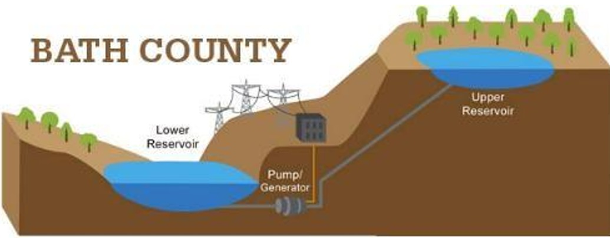
Let's talk about the design of the two reservoirs, the upper and lower reservoirs, which are created by earth and rock-filled embankment dams, which are artificial dams made by the placement and compaction of complex semi-plastic mounds of various compositions of soil or rock. The upper reservoir is high, long, and has a structural volume of 18000000 cuyd (Cubic yard). The lower reservoir has a structural volume of 4000000 cuyd. As shown in Figure 36, this looks like its design in real life.
Let's start with the full design. Firstly, as we said, one reservoir is higher than the other. The lower reservoir dam is in the Back Creek. Back Creek is a river in Virginia, USA. It is a tributary of the Jackson River, part of the James River watershed. The upper reservoir dam is in the Little Back Creek. To connect the upper reservoir, there are three conduits that connect them together. Each conduit leads to a shaft that bifurcates into two penstocks (pressure tubes), making them six branches before reaching the turbines. This was a simple explanation of the design.
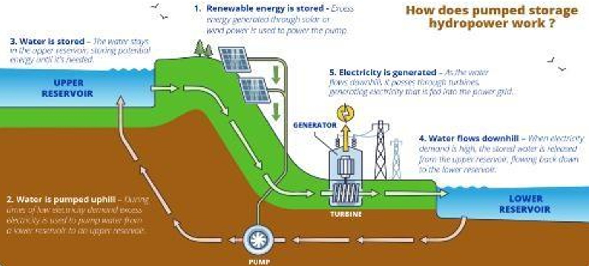
Now, let‟s explain the method of operation. Water is released from the upper reservoir during periods of high demand like in daytime as everyone needs energy. The water flows through the turbines to generate electricity, but now a question might come to your mind, “What is different about this dam?” what makes this different from other hydroelectric dams is that during times of low demand, like the night-time as everyone is sleeping, power is taken from other energy plants like coal and nuclear plants, and is used to pump water from the lower reservoir to the upper one. Although this plant takes more power than it produces, it allows other plants to work at its peak level without having to change their level, which costs a lot of money. At the same time, it doesn‟t leave the wasted energy of the other plants in low-demand time, but it uses it to generate more energy.
The Bath County pumped storage station has a massive maximum generation capacity of 3,003 MW, which is the speed at which energy. This is so massive in energy generation. It also has a total storage capacity of 24,000 MWH, which is the amount of energy that can be stored. This allows to provide energy at any time. It can run for 11 hours of energy at full charge. It can also power about 750,000 houses, which means you can power more than one city with it. Its upper reservoir can hold about 11.6 gallons of water. This volume is “electricity” waiting to be released.
The Bath County pumped storage station saves costs through exploiting the wasted energy during the low-demand times, like nighttime, as there is no need for high energy. It exploits the energy of other energy sources, such as coal and nuclear plants. This allows the other energy plants to operate at their peak without the need to change their levels, fearing energy waste, which saves a lot of money and helps develop automation. Instead of building expensive natural gas or coal stations to work only for 2 hours at the peak time of using energy, Bath County can be used, which saves the money of building new stations.
The main function of Bath County is to turn hydroelectric energy into electricity used for various purposes, so it doesn‟t use fossil fuels, which are harmful to the environment. It depends only on the hydroelectric energy. In addition, during dry summers, the station releases water from the upper reservoir into the lower reservoir, which is on the Back Creek River, which ensures the continuous flow of the stream. This protects the aquatic life, such as the life of fish and aquatic plants, that would otherwise die during dry summers. Finally, the water is kept clean as it only moves through two reservoirs. It doesn‟t pick up any chemicals or pollutants.
Building a power plant like Bath County would be impossible in recent days due to its cost. Bath County requires both time and money. Money to dig into solid rocks to make massive tunnels and to build enormous dams (upper & lower reservoirs). The initial investment is so high that it could take decades to “break even”. Most companies in recent days prefer smaller, cheaper farms that can be built in months, instead of The Bath County, as it is a pumped-storage plant that can take ten years or more to be finished. Time is money, as energy is needed everywhere, especially because of the Industrial Revolution.
From the information about Bath County, it is known that the reservoirs are open to the air. They are vulnerable to the environment. As a result of that, there will be a water loss in hot summers, millions of gallons of water can be lost to evaporation, which is common in Virginia. Every gallon of water represents a specific amount of potential energy. If there is a multi-year drought, the battery can‟t be fully recharged as there is not enough water to fill the lower reservoir. This means there is no energy. It is also a thermal challenge as water levels drop; the remaining.
It is assumed that pollution cannot be a consequence of applying this solution. This is essential to ensure that water pollution due to the burning of plastic wastes does not increase, resulting in lower water quality levels, which can lead to future concerns about health problems.
The solution should utilize recycled and available materials, such as using plastic in making blades of the wheel, and utilizing wood in building due to its strength and availability. This is a key requirement for ensuring that pollution rates are reduced and that cost-effectiveness can be achieved. This is due to lower fees paid on transporting the materials needed or even importing them from foreign countries.
The solution should consider providing Egyptians in the location with jobs in energy to decrease their need to work in less-paying plastic factories. This is one of the core requirements of the solution: to provide locals with better income levels, enabling them to meet their basic needs and decrease poverty rates.
The solution must not be done without the locals' acceptance, as it might be perceived as a threat to their qualities and cultural heritage. To deal with this, the solution must be applied with their acceptance. This can be done by demonstrating its effectiveness and the future outcomes of its application.
The solution must be scalable to resolve the issue of water flow, while allowing the flow to continue without being responsible for the pollution consequences. Also allowing for it to be used in enhancing national industry in the long-term, and the possible exportation of the products.
Energy production in any energy plant is the most important feature, as it determines whether the plant is profitable. To ensure it is profitable, it should produce energy that it uses, or at least compensate for wasted energy, as electricity storage plants do. We chose the Pelton wheel as it has a high energy production and efficiency with an easy structure. In our project, we need to produce at least 150 joules with an enhancement of up to 165 joules or more, and the expected production of our Pelton wheel, which has a filtration system enhancement, is 1000 joules, which meets the requirement.
In Yousef El-Sdeeq center, our location specifically Wadi El-Rayan, there is a lot of wasted plastic and materials thrown in the valley, so instead of leaving these materials thrown, recycle it and we could use them to build some parts of the Pelton wheel. In our project, we need to make the project environment-friendly, so we will use recycled plastic to build specific parts in the Pelton wheel to save the environment and, at the same time, produce huge amounts of energy.
One of the most important features is to be lightweight. Lightweight affects the amount of energy that the wheel could produce. If the wheel is light, it could produce a high amount of energy, as the wheel will spin faster. If the wheel is heavy, it won‟t spin fast, which means no energy. In our project, we will use light materials like plastic, and we will use heavy materials like aluminum in specific parts that are needed.
The selected solution is making a Pelton turbine at one of the canals of the Wadi El-Rayan waterfalls in the Wadi El-Rayan district. These falls connect the upper and lower lakes, which are fed by agricultural drainage water transformed into a desert oasis. The falls were created by the flow of water from the higher “Upper Lake” (10m below sea level) to the lower “Lower Lake” (32m below sea level) by the effect of gravity. There are three main sets of falls. The most prominent is the High Fall, where the water drops several meters over natural rock formations. The discharge rate of the waterfalls is dependent on the seasonal irrigation cycles of the Fayoum region. The falls run over Eocene limestone and sandy formations. Erosion management is a constant factor in preserving the structure of the cascades. Because the Upper Lake receives direct drainage from the El-Wadi Drain, its salinity remains relatively low (typically 1.5 to 2.0 g/L), which supports different dominant species compared to the more saline Lower Lake, such as Tilapia, Mullet, Gras carp, and catfish, and serves as a vital stopover for migratory birds. The fall contains many streams. The selected stream is in the high fall with a 10m width, 20m height, and 40cm depth. The water inside the stream moves with a velocity 1.5m/s towards the south with a flow rate of 5 m3/s. To allow organisms to safely continue their path down the waterfall, a 3m width was selected for the solution, so the flow rate is 1.5 m3/s.
Intake Basin in a V shape, coated with zebra-like yellow and black stripes, was selected as the basin stabilizes the turbulent water entering from the waterfall. The concentrator's function is Hydraulic Amplification. In a low-head environment like Wadi El Rayan, capturing a large volume of water and forcing it into a smaller space is the only way to achieve the high-speed flow necessary to drive an impulse turbine. It acts as a passive pump, "charging" the water with kinetic energy before it even enters the pipes. The primary reason for using alternating stripes in flowing water is a phenomenon known as „Disruptive Coloration‟. When water moves rapidly over a striped surface, it creates a visual distortion called „Motion Dazzle‟. This effect overwhelms the fish's optical tracking system, making it nearly impossible for the fish to accurately perceive the object's distance, speed, or dimensions. In a high-flow environment, this uncertainty triggers a natural „avoidance response‟, as the fish perceives the area as unstable or hazardous.
Two penstocks of 600mm diameter were selected as the Penstock acts as the accelerator of the system. By maintaining a constant two 600mm diameter, it delivers a massive flow rate of 1.5m3/s at a calculated velocity of 19m/s directly toward the turbine.
The Square-Edge Intake with Anti-Vortex Fins (+)was selected for Fluid Stabilization. Without a Bellmouth to smooth the entry, the water is prone to spinning and sucking in air. The (+) fins ensure that the water column inside the 60cm pipe remains Solid and Continuous. This protects the turbine from "Air Entrainment," which can cause erratic rotation and mechanical vibration.
A Pelton turbine with 100cm runner diameter, 17 buckets with 0.787m, 0.562m length, 0.225m depth, 0.27m notch width was selected as the runner‟s function is Mechanical Transduction. It is the bridge between the hydraulic energy of the waterfall and the mechanical energy of the shaft. Its design allows it to operate at high RPMs even with the relatively lower head of 20 meters, provided the jet is properly aligned with the bucket splitters. The function of the bucket geometry is Energy Harvest Optimization. By precisely controlling the path of every water droplet, the buckets ensure that the water leaves the turbine with almost zero kinetic energy, meaning the maximum possible amount of power has been transferred to the system.
The Yusuf al-Siddiq district represents a critical energy challenge within the Fayoum Governorate. Being located at the end of the electrical pumping stations, the district suffers from a severe Voltage Drop of up to 25%. In rural and remote villages, the electricity arrives at a degraded 160V or 170V instead of the standard 220V, leading to appliance failure and hindering economic development. This problem is fundamentally a "Distance and Resistance" issue; the further the village is from the central source, the greater the electrical loss.
The proposed solution addresses the root cause of the problem by moving the Source of Power closer to the Consumer. By installing a Pelton Turbine system in local waterways like the Wadi El Rayan falls or nearby canals, we shift from a "Centralized" to a "Decentralized" energy model that eliminates distance as generating power locally in Yusuf al-Siddiq eliminates the long transmission lines that cause the 15-25% voltage drop.
In the context of Fayoum‟s geography, the Pelton turbine is scientifically superior to the cross-flow wheel for many reasons: The waterways in Yusuf al-Siddiq and Wadi El Rayan are characterized by high Head (high Altitude Drop) and low Flow (low Volume). A Pelton Turbine requires high pressure and a massive vertical drop (High Head) to function. In our environment, a Pelton wheel would succeed in rotating effectively. The Cross-Flow turbine, however, is designed specifically for low-head environments, extracting maximum energy from the weight and volume of the water rather than just its pressure.
In constructing the prototype, the used materials are: PLA plastic, ball bearings, PVC plastic, plastic basin, ball valve, hose barb connector, and male threaded hose barb adapter.
The wheel was constructed using PLA plastic by a 3D printer, with 16 double buckets and a diameter of 0.2 m. After that, the PVC shaft is shaped with a diameter of 0.027 m. The ball bearing is used to decrease the friction and to stabilize the shaft at the top of the basin. We used ball bearings with a 0.07 m diameter. The basin is the base of the project, and it collects the pumped water. The PVC plastic is used in the nozzle, with a ball valve to control the water flow, and a hose barb connector to link the hose, which is the source of the water, to the nozzle. Also, a hose clamp is used in stabling the hose in the hose barb connector. The nozzle‟s height is 1.5 m. In gluing most of the parts together, we are using the Stoch tape and weld bond 717. Furthermore, the male threaded hose barb adapter will be used as the enhancement, as it decreases the cross-sectional area of the nozzle, thereby increasing the water velocity. Finally, we will use a direct current generator with 24 volts and 1200 RPM.
The basin, which is the base, will be 1m in length, 0.5m in width, and 0.3m in height. The Pelton wheel has a diameter of 0.2 m and will spin with the shaft after connecting it with the glue gun and the tape. After that, the ball bearings will be connected to the two poles of the shaft to let us install the shaft on the basin‟s top.
Then, we will prepare the nozzle. A 1.5 m height plastic pipe will be cut, and we are going to change its direction using a PVC elbow. After that, we are going to connect the ball valve with the elbow, and we will get a nozzle with a ball valve at its beginning. Then, we will install the male threaded hose barb adapter at the end of the nozzle, facing the wheel.
After that, we will use acleric to make 2 gears, the first one will have 120 teeth, and the second will have 40 teeth with a 1:3 ratio. Then, we will connect the big gear to the shaft, and the small gear to the generator, and the two gears will be in touch. At the end, we will connect the generator with the board by some wires, and install an LED in the board.
The tools we will use are: the 3D printer from the fab lab to construct the skeleton of the wheel, a saw for cutting the plastic for the nozzle, and some wires to connect the generator with the wheel. We will also use a glue gun to connect the parts together.
The methodology would be as follows: Firstly, the basin will be prepared. Secondly, the plastic tubes will be cut to the dimensions. Thirdly, the Pelton skeleton will be constructed by the 3D printer. Fourthly, the male threaded hose barb adapter will be connected to the nozzle. And finally, the generator will be connected to the wheel.
| Name | Quantity | Description | Usage | Picture | Price |
|---|---|---|---|---|---|
| 3D-Printed Turbine polylactic acid (PLA) plastic | 1 | A Pelton turbine runner is a circular component used to convert the kinetic energy of water into mechanical rotation. It consists of multiple curved buckets designed to efficiently capture and redirect high-speed water jets. | It used to convert the kinetic energy of water into mechanica l rotation. | 500 LE | |
| Plastic basin | 1 | Plastic basin is used in holding and carrying water and materials inside it. | It used in holding and carrying water and materials inside it. | 150 LE | |
| Polyvinyl Chloride (PVC) Plastic | 1.5m | PVC plastic is an abbreviation for Polyvinyl Chloride. It is a synthetic polymer known for durability. It used for a shaft to hold the turbine and as pipes to connect the water. | It used for a shaft to hold the turbine and as pipes to connect the water. | 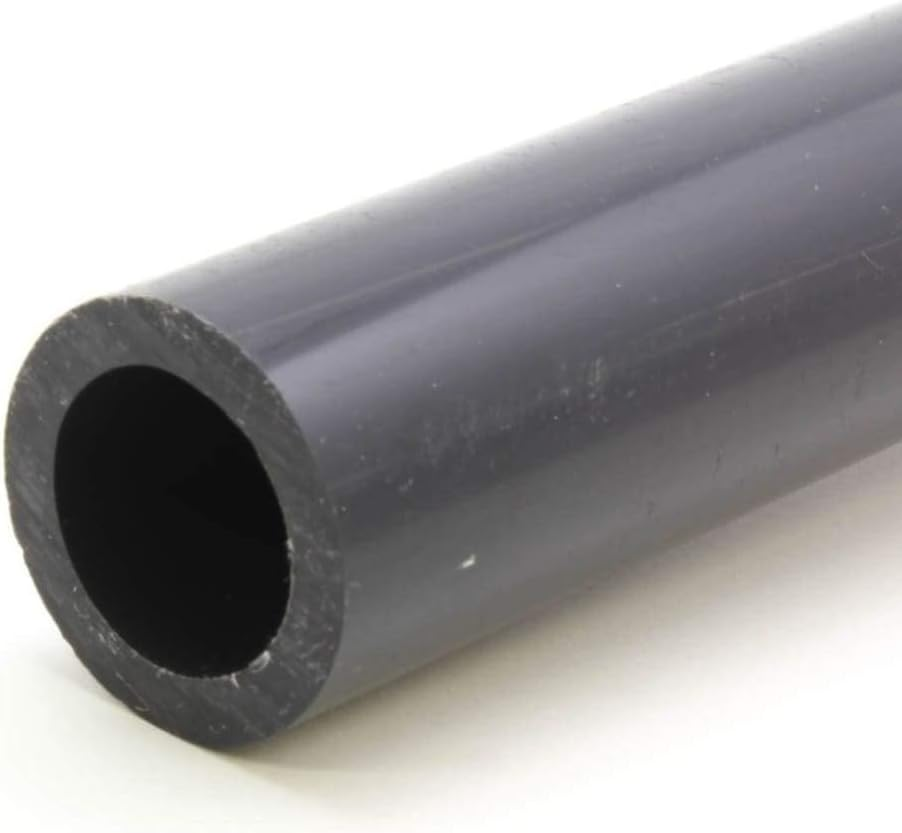 |
300 LE |
| Polyvinyl Chloride (PVC) elbow | 4 | PVC elbow is a pipe fitting used to change the direction of fluid flow in a piping system. It is typically made from durable, lightweight PVC material and is resistant to corrosion. It is used to fluid distribution. | It used to change the direction of fluid flow in a piping system. | 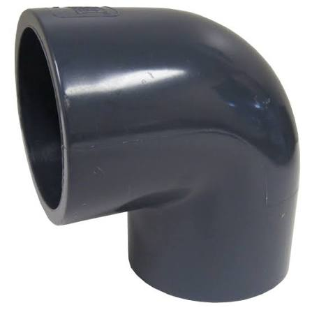 |
50 |
| Ball Bearing | 2 | A Ball Bearing is a mechanical component used to reduce friction between moving parts and support rotational motion. It consists of small steel balls placed between inner and outer rings, allowing smooth and efficient movement | It component used to reduce friction between moving parts and support rotational motion. | 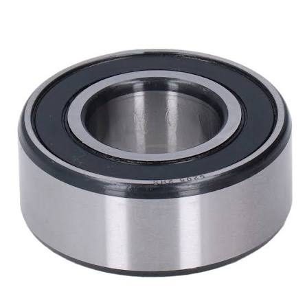 |
150 LE |
| Direct current (DC) motor 24-volt 1200 RPM | 1 | A DC Motor (24V, 1200RPM) is an electric device that converts direct current into rotational motion. It operates at 24 volts and produces a steady speed of 1200 revolutions per minute, making it suitable for small turbines. | It converts direct current into rotational motion. | 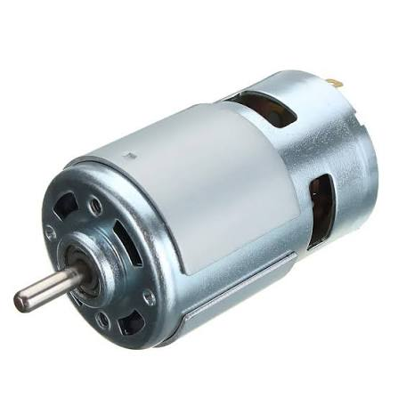 |
250 LE |
| Ball Valve (PVC) | 1 | It's a valve with a ball that used to open, close or control the water that comes in the nozzle. | It's used to control the water that comes in the nozzle. | 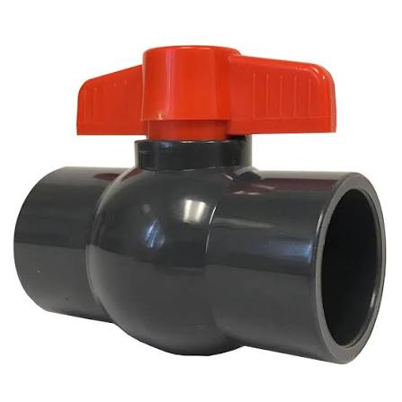 |
50 LE |
| Hose barb adapter | 1 | It's a link between any valve and the hose that water comes from. | link between the ball valve and the hose | 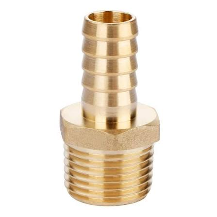 |
25 LE |
| Weld Bond 717 | 1 | It‟s a glue for PVC pipes, used to connect the parts of the nozzle together. | It used to connect the parts of the nozzle together. |  |
55 LE |
| Hose clamp | 1 | A rounded piece of copper or stainless steel has a nail to connect hoses and pipes, preventing leakage. | It connects hoses and hose barb adaptor, preventing leakage. | 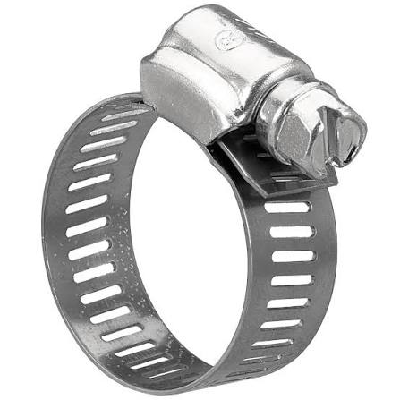 |
10 LE |
| Male threaded hose adaptor | 1 | The threaded hose barb adapter enhances the project's efficiency by decreasing the water's cross-sectional area, thereby increasing the water's velocity. | It enhances the project's efficiency by decreasing the water's cross-sectional area, there by increasing the water's velocity. |  |
20 LE |
| Male adaptor | 1 | Adaptor with male side and a side for pipes. | Connecting the ball valve and pipe. |  |
15 LE |
| Female adaptor | 1 | Adaptor with female side and a side for pipes | Connecting the pipe with male threaded hose barb adaptor. |  |
15 LE |
| Teflon | 1 | It is like a tape for male adaptors to prevent leacking of water. | Connecting male adaptor with ball valve, male threaded adaptor with female adaptor. | 15 LE | |
| Acrylic gears | 2 | Gears of 60 teeth made by acrylic with two holes 26mm, 7mm and thickness 5mm. | Connecting the shaft with the motor. | 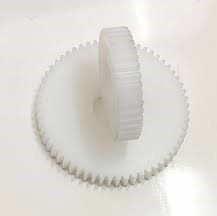 |
50 LE |
| Total | 1655 LE | ||||
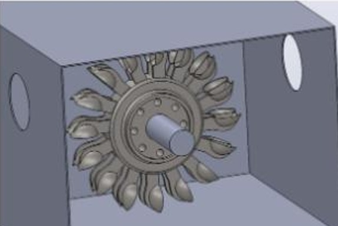

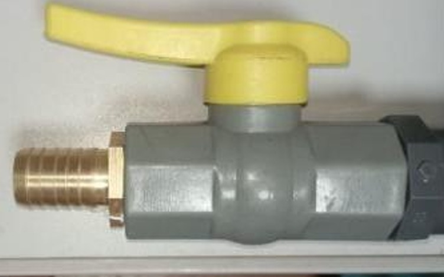
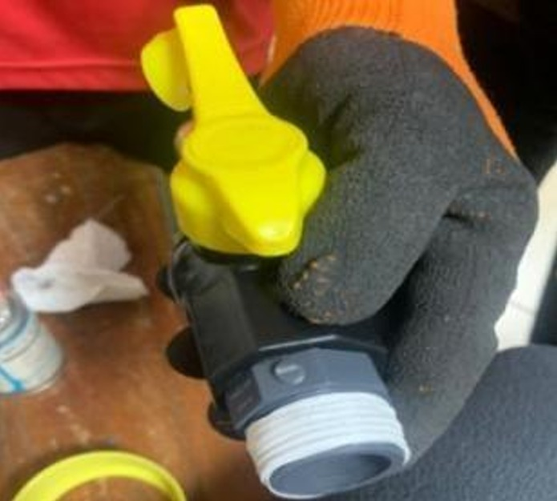
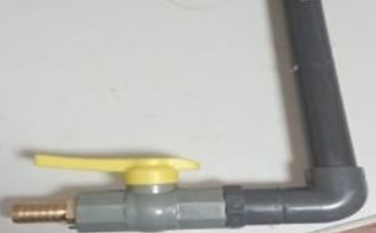
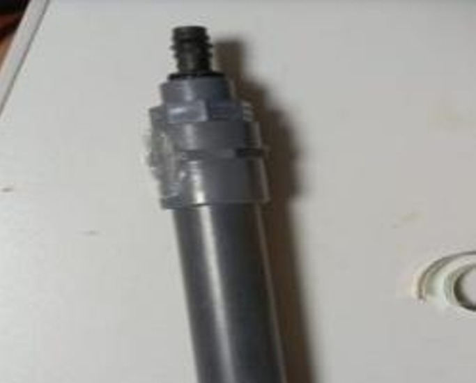
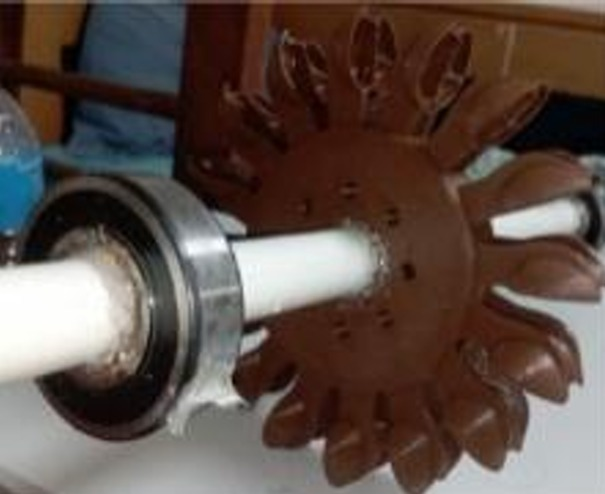
During the construction and testing phases of the project, the team maintained a safe and controlled working environment by following strict safety precautions. A lab coat was worn at all times to protect against dust, adhesives, and other materials used in building the turbine prototype. Protective gloves were essential when handling sharp edges, rotating components, or mechanical parts, helping to prevent cuts and skin irritation.
Safety goggles were used to protect the eyes from small particles that could be produced during cutting, drilling, or operating the turbine system. Closed-toe shoes were also required to safeguard the feet from any heavy components that might accidentally fall during assembly or testing.
All electrical components, including the DC generator and wiring, were handled with care to avoid short circuits or electrical hazards. The system was only operated under supervised and controlled conditions, ensuring that hands and tools were kept away from moving parts such as the shaft and runner during operation. The prototype was firmly fixed in place before running water through the nozzle to prevent instability or sudden movement.
Additionally, the workspace was kept clean and organized by removing waste materials after each experiment. This reduced the risk of accidents and ensured accurate testing conditions. By following these precautions, the team successfully conducted the experiments safely while maintaining the reliability and efficiency of the project.
| Design requirement | Explanation |
|---|---|
| Energy production | The output energy must be at least equal 150 joules |
| Materials | The used materials one of them at least must be recycled |
| Weight | The prototype weight must be light |
After the test plan was made on the prototype. the prototype results were estimated; all three design requirements were successfully achieved. The energy output test demonstrated that the system was capable of producing 10 volt and 0.3 ampere, as shown in figure 52 which leads to 150 joules over a duration of only 50 seconds as shown in figure 53, confirming its efficiency in converting kinetic energy of water into electrical energy through the turbine and generator system
It was also observed that with further enhancement in nozzle design and water flow control, higher energy output reached 34 volt and 0.1 ampere, as shown in figure 54 which leads to 170 joules in 50 seconds as demonstrated in figure 55 which make an efficiency of 13.3%.
Regarding sustainability, the prototype met the requirement of including recycled materials, as some structural and supporting components were made from reused or environmentally friendly materials. In terms of weight, the prototype was designed to be lightweight, allowing for easy handling and efficient operation, while maintaining structural stability during testing.
Determination of the dimensions of a model is very important. To correlate the kinetic energy of water with the dynamic characteristics of the turbine runner, some fundamental laws of hydraulics and several empirical formulas were employed to design the prototype. Firstly, calculating the jet velocity through the formula:
Vj = 𝐶𝑣√2𝑔H
Vj: the jet velocity
Cv the velocity coefficient of the turbine (approximately 0.98)
g: the gravitational acceleration that equals 9.81m/s2
H: The vertical distance the water falls (Head), which is 1.5m
Using the data above, we can calculate the jet velocity to be approximately 4.75 m/s. This velocity, the engine's "jet power", is the principal agent driving momentum transfer onto the turbine buckets during power expansion operations. After Jet Velocity has been established, we need to calculate the Rotational Speed that will achieve the highest efficiency with this system through the formula:
D = 60u/(π×n)
D: The runner diameter. In this design, we chose 12cm, which struck a nice balance between a large diameter for high torque at low head, 1.2 m in this case, and the need to keep centrifugal stress down to reasonable levels. A much smaller diameter would increase that stress and introduce unreasonable demands on the gearbox size.
u: the speed of the bucket movement. The bucket speed is approximately half jet speed for maximum power extraction. Here we have used a speed ratio of 0.46, yielding a bucket speed of 2.45 m/s.
π: constant ≈3.14
n: the RPM of the wheel
The theoretical rotational speed of the wheel is approximately 278 RPM, suitable for the scale of the current laboratory-scale prototype. Due to the friction, the RPM decreased to 216 RPM.
To ensure that the flow rate is efficiently utilized by the nozzle, the specific Jet Diameter can be determined using the continuity equation.
d = √4Q/π×Vj
d: the jet diameter
Q: the flow rate of water that equals 1.25m2/s
The calculated jet diameter is approximately 0.5 cm It is crucial to adjust the number of buckets on the runner to always have the effect of a water jet to be captured and not to have any hydraulic interaction. This interaction ratio is given by the Taygan Formula.
Z = D/2d + 15
Z: the number of buckets that will equal 16 buckets
Having 16 buckets in series means that with any timing, there will be at least one bucket 100% in use. Having fewer buckets would result in the jet possibly passing between them, wasting energy. Having more buckets would result in the buckets being crowded with the water from the previous bucket slapping against the back of the following bucket, creating drag.
When designing a micro-hydroelectric project, the process of turning potential energy into work involves a lot of fluid dynamics. In manipulating the behavior of water through a narrowing nozzle in order to maximize efficiency of a turbine, the Continuity Equation (which is based on the Law of Conservation of Mass) is an important equation to understand.
The Continuity Equation states that for an incompressible fluid such as water, the mass flow rate is constant throughout a closed system. Since the density of water is practically constant for the pressures and operating conditions that occur in most fluid handling applications, the Continuity Equation can be simplified to the expression of volumetric flow rate.
A1 V1 = A2 V2
A1: the area of the pipe that equals 20m2/s
V1: the velocity of the water in the pipe that equals 4.7m/s
A2: the area of the nozzle that equals 8m2/s
V2: the jet velocity that exit the nozzle
Using the data provided we can calculate the jet velocity to be roughly 11.75m/s. This is the “engine’s jet power” and the principal agent intent on bestowing momentum on the turbine buckets during power increase.
After calculating the jet velocity with the enhancement, we then calculate the Rotational Speed that gives the highest efficiency with this system using the following formula:
D = 60u/π×n
D: The runner diameter 12cm
u: the speed of the bucket movement. The bucket speed is approximately half jet speed for maximum power extraction. Here we have used a speed ratio of 0.46, yielding a bucket speed of 2.45m/s.
π: constant ≈3.14
n: the RPM of the wheel
The theoretical rotational speed of the wheel is approximately 816RPM, suitable for the scale of the current laboratory-scale prototype.
To analyze the performance of the Pelton turbine components as shown in figure 56, key principles of Fluid Dynamics were applied. Firstly, the velocity of the water jet exiting the nozzle was determined using Bernoulli's equation:
v = √2𝑔H
Here, 𝑔 is gravitational acceleration and ℎis the water head. This velocity represents the conversion of potential energy into kinetic energy. Next, the kinetic energy of the jet was calculated using:
KE = 1/2 m v2
where 𝑚 is the mass flow rate and 𝑣is the jet velocity. This energy is responsible for driving the turbine buckets.
After that, the force exerted by the jet on the buckets was determined using the momentum equation:
F = 𝑚 (𝑣in − 𝑣out)
In a Pelton turbine, the jet is deflected nearly 180°, maximizing momentum transfer and increasing force. Then, the power output of the turbine was calculated using:
P = 𝑚 ⋅ 𝑣 ⋅ 𝑢
where 𝑢 is the tangential velocity of the wheel. Maximum efficiency occurs when the bucket speed is about half the jet velocity.
Finally, the efficiency was evaluated using:
n = Pout/Pin
which depends on losses such as friction and turbulence. For small-scale models, efficiency typically ranges between 60% and 80%.
These equations confirm that the system effectively converts fluid energy into mechanical power suitable for electricity generation.
| Lo num. | Concept | Usage |
|---|---|---|
| Phy.08 |
|
Fluids provide the mass for the jet, while the pressure difference creates the driving force that accelerates that water against the turbine buckets. |
| Phy.09 |
|
The Pelton wheel uses the Continuity and Bernoulli equations to convert fluid pressure into a high-speed jet, while Conservation of Energy, Laminar flow, and low Viscosity ensure this kinetic energy is transferred to the buckets with minimal loss. |
| Geo.09 |
|
Natural resources are processed into electrical energy and transportation fuels to power our infrastructure and vehicles through various conversion technologies. |
| Geo.10 |
|
Natural resources, like the gravitational or tidal movement of water, are captured by systems like dams to generate electrical energy and produce transportation fuels. |
| Che.08 |
|
Pure substances, specifically water, provide the consistent density and mass required for the jet to reliably transfer kinetic energy to the Pelton wheel buckets. |
| Che.09 |
|
These mechanical properties ensure the Pelton wheel's durability and efficiency: Strength and Uniformity prevent structural failure under high-speed water impacts, while Elasticity and Malleability allow the buckets to absorb stress and be formed into their precise aerodynamic shapes. |
| Che.15 |
|
In a Pelton wheel, the system defines the boundary where potential energy from the environment is captured and converted into mechanical work. |
| Mech.01 |
|
Projectile motion principles determine the optimal launch angle and range of the water jet to ensure it strikes the turbine buckets with maximum precision and force. |
| Mech.02 |
|
The resultant force is the net impact of the high-speed water jet hitting the buckets, which overcomes friction to drive the Pelton wheel's rotation. |
| Mech.04 |
|
Centripetal force and acceleration describe the inward pull and changing velocity required to keep the Pelton wheel's buckets and the water within them moving in a stable, high-speed circular path. |
The grand challenges of the Improve the use of alternative energies and recycling waste are major challenges that face Egypt, and they have many negative impacts. After building and developing the prototype and analyzing the results, it was concluded that the prototype met the set of requirements by achieving 900 joules in 5 minutes before the enhancement and 1020 joules after the enhancement, more than 13.3% efficiency after applying the enhancement. According to the hypotheses, our prototype can even light an LED lamp. The prototype proved that it can work under all the waterfall environments according to the test plan. Our method is represented as a solution for Wadi El-Rayan Waterfall in Egypt, which will help improve the electricity and eliminate the voltage drop.
Aqua Volt is aimed to be in the Youssef El-Seddiq Center. A center in the El Fayoum Government, as in the location appears in figure 57. The Pelton Turbine is made in the shape of 16 buckets, 2 penstocks, and a wheel, with dimensions equal to 1 meter in diameter, 78.75cm in bucket length, 51.75cm in bucket width, 22.5cm in bucket depth, 25.8cm in notch width, and 19m penstock height. The penstock is made from High-Density Polyethylene (HDPE) Pipe (PN10 Rating) because it is UV- resistant and flexible enough to follow the natural terrain of the Wadi El Rayan cliffs. It handles Water Hammer better than rigid PVC. It is used to transport water from the intake to the turbine with minimal friction loss. The nozzle is made from Hardened Stainless Steel (400 Series) because this is the highest-wear area. Water moves here at 19.8m/s. Hardened steel prevents the sandpaper effect of micro-silt from widening the jet, which would drop efficiency. It converts the high-water pressure to high jet velocity (19.8m/s). The Pelton runner is made from Cast Stainless Steel (Grade 316). Grade 316 offers superior resistance to the slightly saline/alkaline water of the Fayum lakes. It prevents pitting and rust. The water jet hits the center splitter of the bucket and transfers nearly all its momentum to the wheel. The selected gearbox is a Helical Parallel Shaft Gearbox with a gear ratio of approximately 8.6:1. This design is chosen specifically for its high mechanical efficiency, often exceeding 96%, and its ability to handle the high torsional stress generated by a 1-meter diameter wheel. The primary function of this gearbox is speed multiplication. A brushless AC Synchronous Alternator was selected for the electromagnetic conversion of mechanical energy into regulated electrical power.
The bell mouth inlet is a shaped aerodynamic or hydrodynamic inlet designed to guide fluid flow such as air or water into a tube, pipe, or turbine, as shown in Figure 58, with negligible turbulence and energy loss. It‟s a precision tool used to measure flow, test turbine, and hydraulic machinery to produce a uniform, well developed velocity profile at the inlet plane. They are considered the reference standard for inlet flow conditioning.
The bell mouth works by converting static pressure to velocity pressure in a controlled method. As fluid enters the wide inlet and flows toward the narrower throat (exit plane), it accelerates according to the continuity equation.
The curved shape tricks the air and makes it behave completely in order without turbulences or energy loses, furthermore it is engineered to remove boundary layer separation. By maintaining a negative pressure gradient throughout the contraction, the boundary layer remains thin and attached. This produces a highly uniform, flat velocity profile at the exit plane, which is essential for accurate flow measurement and efficient turbine inlet conditions.
While the Bell mouth geometry is superior for optimizing intake flow, its application in the prototype was limited by manufacturing complexity and cost efficiency. Achieving the precise oval profile required high-end 5 Axis machining to prevent flow separation, which would have significantly overestimated the research and development budget for a single component. Therefore, the bell mouth wasn‟t applied in the prototype.
The Coanda screen is a highly efficient and effective water intake system that uses the Coanda effect to create smooth and efficient water flow, as shown in figure 59. Whether you're looking to extract water for power generation, industrial processes, or municipal water supply, the Coanda screen water intake system is worth considering.
A Coanda screen intake influences the Coanda Effect to provide an efficient and low maintenance solution for capturing water and minimizing fragments and aquatic organisms' intake.
The Coanda effect describes the tendency of a fluid jet to stay attached to a convex surface. When a fluid stream meets a curved surface, it tends to stick to it rather than following a straight path. This principle is widely applied in various engineering fields, including aerodynamics and fluid dynamics.
Water flows over the screen surface at a controlled angle, adhering to the screen due to the Coanda Effect. As the water adheres to the screen, it passes through the fine slots, while fragments, leaves, and other particles are left behind. After that, the clean water is collected on the downstream side of the screen and redirected for use, while debris is either washed away by the current or collected for manual removal.
The screen is engineered in curved shape, typically made of stainless steel, with specifically angled openings to allow water to pass through, preventing fragments from entering.
Working on this project helped us grow significantly as STEM school students in several important ways.
First, it strengthened our problem-solving skills. Throughout the project, we faced challenges in design, energy generation, and efficiency. Instead of following fixed steps, we had to think critically, test different ideas, and learn from our mistakes. This improved our ability to approach complex problems in a scientific and systematic way.
Second, it improved our understanding of scientific concepts. We didn‟t just study theories like fluid dynamics or energy conversion we actually applied them in a real system. This made concepts more meaningful and helped us connect physics, math, and engineering in a practical way.
Third, the project developed our engineering and design thinking. We learned how to design a prototype based on specific requirements, test it, evaluate its performance, and then refine it. This iterative process is a core skill for any STEM student.
Fourth, it enhanced our teamwork and communication skills. We had to divide tasks, share ideas, and solve problems together. Explaining our design and defending our decisions also improved our ability to communicate scientifically.
Finally, it taught us time management and responsibility. Working under deadlines pushed us to organize our work efficiently and stay committed to completing each stage of the project.
Overall, this project helped us become more independent thinkers who can apply knowledge, analyze problems, and work effectively as a team just like real engineers and scientists.